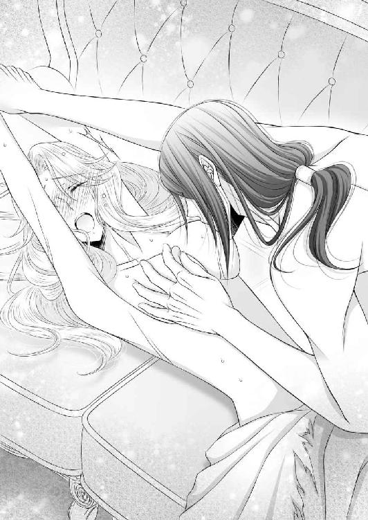
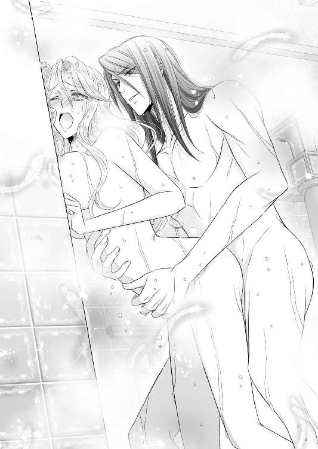
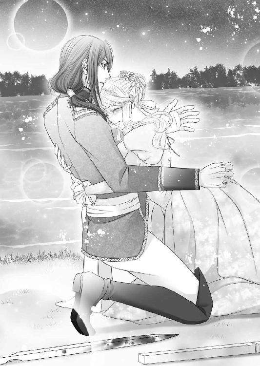

| 若く美しい国王は、夜ごと濃密な愛をほどこします (LUNA文庫) | |
| 紅緒 まこ | |
| 天海社／LUNA文庫 (2018) | |
若く美しい国王は、夜ごと濃密な愛をほどこします
［著者］紅緒まこ
［イラスト］緋月アイナ
日記
紫光月12
この日記を書き始めてから、もう随分と歳月が経ちますけれど、今日は生まれてから三番目に嬉しいことがありましたの。
うふふ。なんとわたくし、恋人のサディアスから結婚して欲しいと告白されましたの！
出会ってから十二年。脳内やこの日記では幾度となく、あんなことやそんなこと、口に出すのも憚られる秘密の妄想を繰り返してきましたけれど、やはり本人から改めて「結婚して欲しい」と求められるのは胸のときめきが違いますわね。言葉を聞いた瞬間、小惑星の衝突の如く胸がパンッと破裂するかと思いましたわ。
はあ、美しくて聡明で、心が広くて面白くて、底なしに優しいサディアスが......わたくしの旦那様に......。夢だと思って頬を抓りましたけれど、何度やっても痛いので夢ではありませんわ。でも、やっぱり今でも信じられませんの。だって、あのサディアスが、旦那様にですわよ？
わたくし、幸せすぎて死んでしまうのではなくて？（まあ、あと五十年ほど死ぬ気はないのですけれど......）
婚姻の式典は、半年後。わたくし、幸せになりますわ。もちろん、大好きなサディアスのことも全力で幸せにしますわね！
――メルヴィナ 記
プロローグ
紫光月より半年後の黄光月。春陽に芽吹き始めた花々の芳しい香りが風に乗り、薄桃色の花弁が宙に舞うレディトス王国の王都ランデュ。その中心部にそびえ立つ白亜の城――歴史あるペンタラコス城の城内に建てられた聖ネヴァ大聖堂は厳かな雰囲気に満ちていた。
見上げるほど高い硝子張りのドーム天井から差し込む朝の陽光は、天からの祝福を予感させるのに十分な神々しさがあり、これから始まる儀式の参列者の胸に未来への希望を与えた。
呼吸音はおろか、衣擦れの音もしない厳かなこの場には、王族はもとより国の中枢を支える大臣や貴族、それに近隣諸国の大使の姿がある。本国の紳士は頭髪や髭を整え凛々しい面差しで、黒い正装を身に纏い、肩には真白いマントを巻いて胸元で金色の留め金で留めていた。一方、淑女は式典に相応しい落ち着いた色味のドレスを着用し、男性と同じマントを羽織っている。これはレディトス王国に古くから伝わる最も格式高い祭礼着だ。
この物々しく厳かな雰囲気から分かる通り、現在、この聖堂では新王即位の儀式が執り行われている。
居並ぶ諸侯たちの視線は大正門より真っ直ぐに伸びた深紅の絨毯の先――絢爛豪華な黄金の使徒像が彫刻された祭壇に向かっていた。そこには頑健で恰幅の良い身体に汚れ一つない純白の祭服を纏った聖職者の後姿がある。権威如何は絹と金糸装飾されたミトルから判断できるだろう。彼の人物は国教会の聖座たる教皇ヨハン三世だ。
聖座は、もうずっと壁に彫刻された黄金の使徒像を見つめながら時を刻んでいたが、天井から一筋の光が祭壇に差し込んだ時、手にした黄金の権杖で床を叩いた。蕨のような丸い先端に通った輪冠が小気味よくシャンと鳴ると、それが合図だったのか、同じく祭壇前にいた青年が静かに石床に片膝をつく。
御年八十の聖座は緩慢な動きでくるりと踵を返した。足元で、うつむき加減に屈み込んでいる青年の顔は見えない。襟元に毛皮のついた豪奢な濃紺のマントを羽織り、腰には儀礼用の剣が一振り。
「サディアスよ」
「ここに」
「これより戴冠の儀を始める。心の準備は良いな」
「是非もなく。教皇陛下の御心のままに」
サディアスと呼ばれた青年は落ち着いた声音で答えた後、右手で心臓部分を押さえ、頭を垂れる。その様子に聖座は鷹揚に頷き、そっと権杖の先端をサディアスの頭に添えた。彼の紅茶色の長い髪が肩から胸元に流れ、紗のようにその顔を隠してしまう。
「汝、神の友にして御子サディアスよ。神の御前にて己を示せ」
「――我は、レディトス王国の前国王シュトラウスの嫡出子にして王太子として立ったサディアス・ストラ・ファントメーゼ。我は常に御心と共にある一神徒であり友である」
「ではサディアスよ。汝は、いかなる受難が襲い掛かろうとも、天から授かりし天命を果たすことができるか？」
「我が道に逃亡の文字はない。ただひたすらに前へまい進していくだけ。掛かる敵は薙ぎ払い、我を脅かす――すなわち我の慈しむべき無辜の民を害する悪漢は我が王家の名の下に排除するだろう」
「よろしい。では善き使徒であり友である王太子サディアスよ。ここ、神の御前にて宣誓せよ」
聖座はそう静かに告げると、サディアスの頭に添えていた権杖を退けた。サディアスはすぐに立ち上がり、腰に佩いた宝剣をゆっくりと引き抜いて天へと掲げる。冴え冴えとした美しい剣身は天井より差し込む光に燃えた。
「神より授かりし創世の剣と我が王家の聖霊の御名の下に――レディトス王国王太子サディアス・ストラ・ファントメーゼがここに宣言する。一年前、道半ばで崩御した前王シュトラウスは、今際にこう言った。〝王国を統治せよ〟と。王太子である我にはこれを果たす義務がある。綺麗ごとなど申さぬ。我は、言の葉と武力によって、この国を統治する」
「......」
「異議、異論のある者はこれへ並べ。上奏の後に、この宝剣で屠ってやろう。我は誰にも媚びない。そして歯向かう者には容赦もしない。我はレディトス王国の絶対君主サディアス・ストラ・ファントメーゼなのだから！」
明朗に諳んじられた宣誓は粗暴でおよそ神に捧げるものではない。しかし、その絶対的強者の姿勢には確かに覇王の気があった。
間違いない。今、この瞬間、レディトス王国に新王が誕生した。それを認識した参列者たちは一拍後、一斉に歓喜の声と喝采を起こす。
「新王陛下万歳！」
「サディアス陛下に神の祝福を！」
「サディアス陛下～！ こちらをご覧になって～！」
「いえっ！ わたくしに微笑みかけてくださいまし！」
先ほどの厳粛な雰囲気が一転、火がついたように男性からは祝福の声が、女性からは明らかに性質の異なる黄色い声が上がった。特に女性は、やれ〝こっちを向いて〟〝独身最後のご尊顔をわたくしに！〟と、声が止むことはなかった。
神聖な儀式にこの騒ぎ。聖座は、突如起こった混沌にやれやれと肩を竦め、隣に立ち並ぶ長身のすらりとした青年に目を向けた。
サディアスは鞘に収めた宝剣を片手に持ち、声など聞こえぬとばかりに素知らぬ顔をしている。
無表情でもため息が出るほど美しい。まるで芸術家が長年の歳月をかけて彫り上げた彫刻美術と言うのだろうか。
男性らしい高い鼻梁に長いまつ毛に縁どられた瞳は不思議な魅力のある赤褐色。礼装を着こんでいるため分かりにくいが、少し日焼けした鍛え上げられた肉体に赤い瞳は見る者を圧倒する力を持っている。人前で滅多に弧を描かない薄い唇は色気があり、顎も形が良い。これだけでも女性好きするのだが、紅茶色の長い髪が彼の冷淡な印象を少し和らげていた。肩まである髪は片側にまとめて胸に垂らされ、王家の紋章である大鷲を模した銀細工が毛先で光り輝いている。
大抵の人間はサディアスと対面するとまず言葉を失う。最初は人形のように美しい。そして次に怖い、と思うのだ。王になる素質は多岐にわたるが、生まれ持った容姿もその一つだろう。サディアスは確かに独特の魅力があった。衆目が歓喜するのも頷ける。
そんな喧々囂々とした大聖堂だが一方で、外――大正門の柱の陰に隠れてひょこひょこと中を覗いている彼女は穏やかではない。
「......何が起こっているのかしら？ よく分からないですわ」
彼女の名前はメルヴィナ。サディアスの婚約者であり、この後、この大聖堂で婚姻式を挙げることになっている新婦だ。
新婦らしくシルクを何枚も重ねた豪華で美しい純白のウェディングドレスと花と鳥の刺繍が施された長いベールを纏っているが、彼女は汚れなど気にしないとばかりに柱にしがみ付き、瞬きする時間も惜しいと、じっと、恋い慕うサディアスの後姿を大きな若草色の瞳に焼き付けている。
「みんなあんなに近くからサディアスの姿を見ることができるなんて......羨ましいですわ。わたくしも早くサディアスの傍へ行きたい......」
かれこれ数刻は離れ離れだ。彼の顔を近くで見たのはいつだろう。
（ああ......戴冠の乙女が愛しいサディアスに王冠を授けますわ。できることならばわたくしが、その役目を担いたかった）
寂しさと悔しさが募ってベールの奧のメルヴィナの顔が歪む。
王冠を戴くことは、戴冠の儀で最も象徴的なこと。教会の美しい乙女が神の代理として新しい君主に王冠を授ければそれで儀式は終わる。メルヴィナは、一番近くでサディアスが王となる瞬間を見たかったが、彼女は隣国クラリアス公国の第一公女。それに教会の乙女でもないため、戴冠の儀自体に出席できず涙を飲んでこうして大聖堂の外にいるわけだ。
が、メルヴィナの切り替えの早さはかなりのものだ。
（少しくらい良いですわよね）
サディアスの近くにいられないならば、遠くからできることをするだけ。
メルヴィナは、素早くドレス裾に手を入れると、そこから花柄の日記帳とペンを取り出した。表紙を開いた次の瞬間には、ペン先がカリカリと白い紙の上を滑り始める。
「うふふ......もうもうっ。止まりませんわ！ 大聖堂で剣を掲げて宣誓をするサディアスは信じられないくらい格好いいですし、天井から降り注ぐ光を一身に受ける姿は美しいという言葉に尽きますわ！」
興奮状態なのか、メルヴィナは鼻息荒く猛烈な勢いでペンを走らせていった。薄いベールで顔を隠しているためハッキリとは見えないが、目は爛々と輝き、白い頬は紅潮している様子。
これは彼女の趣味の日記。本日はすでに軽く十頁は綴られた。たまに事実と異なることや願望が入り混じるがそれはご愛敬だ。
「ううっ。やっぱり近くで見たかった......そうすればもっと臨場感ある描写ができますのに！ こうなれば妄想しかございませんわね。ええっと......美しいサディアス。わたくしは貴方のすべてを知っているの。王の顔は厳しく。でもわたくしに見せる顔は甘く。わたくしの肌に触れる時は壊れ物を扱うようにそっと。逞しい腕はわたくしを淫らに抱き締め、寝台では耳元でたくさんの睦言を呟いてくれる。きっと今夜も、貴方はこれ以上ないくらい昂ぶり、わたくしをめちゃくちゃに――きゃああああーー！ サディアスの破廉恥！ でもいいの！ 破廉恥でも大好きですわ～～！」
メルヴィナは、一人であらぬことを妄想して興奮する。これは彼女の日常の一部で、誰にも止めることはできない。サディアス愛が強いため大体毎日暴走して恥ずかしいことを口走っている。最初こそ、外聞が悪いと侍女たちは注意したが、治るどころか年を重ねるごとに酷くなっていったため、現在では放置が基本だ。今も、メルヴィナ付きの侍女やメイドは三歩後ろに控えて黙して語らなかった。
この場にはペンを走らせる音と鐘の音が響く。
「――メルヴィナ、もう準備はできたのかい？」
「え......」
サディアス愛を爆発させながら日記をしたためていると、後ろから声を掛けられた。書き物の手を止めて振り向けば彼女の両親であるクラリアス公国の大公夫妻であった。まだ壮年と言っても差し支えない夫妻は――特に、大公妃は風格と色気を抜きにすれば蜂蜜色の髪と若草色の瞳でメルヴィナとよく似ていた。二人は、この後の婚姻式に出席するため、公国の色である緑を基調とした正装に身を包んでいる。
メルヴィナは両親の姿を認めると、踵を返して軽く膝を折った。
「大公陛下。それに大公妃様も。こちらにいらっしゃるなんてどうしたのです？」
「嫁ぐ娘との最後のひと時を楽しもうと思ってな。しかし、大公陛下なんてあまりにも他人行儀じゃないか。こんな日くらい父母と呼んでくれないのかい？」
「だって......ここは公国ではございませんし......」
「ふふっ。わたくしたち以外に誰もいませんよ。気にすることはありません」
大公妃の言葉を受けて侍女たちは頭を下げながら静かにその場を後にした。
親子水入らずになると、途端に大公は苦笑する。
「もう一度目の鐘が鳴ったが、お前は相変わらず日記を書いているのだな」
「え？ 鐘......鳴りましたの？」
まったく鐘の音など聞こえなかった。メルヴィナは、思わず青い空を仰ぎ見て、耳を澄ませてみる。すると、何度目か分からない鐘の音が確かに聞こえた。
一度目の鐘は新王即位の報せ。この鐘があと九度王城に響き渡れば、婚姻式が始まる。
（......本当ですわ。まあ......わたくしったらなんてこと）
「あんなに大きな音に気が付かなかったのか？」
「えっと......はい。少々日記に夢中になっていたようで......」
「まあ。陛下の戴冠の儀はそんなに退屈だったの？」
「いいえっ！ そんなまさか！ 最高に素敵でしたわ！ ただ、ここからだと少し物足りなくて......」
「なるほど。それで妄想に耽っていたわけだな」
「お父様！ 別に妄想ではありません！ サディアスがいかに格好良く美しいのかを書き記しているだけです！」
「......別になんでも構わんよ。お前が少し変わっているのは昔から知っているから」
「それにしても、物足りないなんて言葉が貴女の口から出てくるなんてね。大聖堂に入れないと分かっていたのだから双眼鏡でも持ってくればよろしかったのに」
「......！」
大公妃の言葉にメルヴィナはハッとした。目から鱗とはこのことか。彼女は両手で頬を挟みながらわなわなと震えた。
「いやだっ、お母様！ どうして思いつかなかったのかしら。その手がありましたわね！ 今後は携帯いたしますわ！」
「......お前は斥候にでもなるつもりかい」
娘の相変わらずの調子に、大公の笑いは苦くなるばかり。
小さい頃からどこに出しても恥ずかしくない公女にしようと育ててきた。容姿は、〝クラリアス公国の薔薇〟として名を馳せた大公妃によく似たため、今では国で一番美しいと評されるまでに成長した。勉学も公国の第一公女であることから、各分野の専門家に教鞭を執らせ、社交界デビューする頃には公国で最高位の大学院卒業レベルにまで達した。マナーも教養も彼女の教育係として名乗り出てくれたシュリー侯爵夫人お墨付きだ。
可憐で、勉学もできて教養もある。なのに、好きな人のことになると途端に意味不明な日記をしたため暴走してしまうメルヴィナ。
結婚したいとサディアスから申し入れされた時、大公は嬉しさよりも本当にこんな娘でいいのかと悩んだものだ。なにせレディトス王国は、このグローサム大陸で最も歴史が古く、諸外国から畏れられる富国。弱小国家であるクラリアス公国の公女......しかも変わり者を大国の王妃になど、どうしても考えられなかった。大公のその煩悶は今でも胸の片隅にある。
「......サディアス陛下はどうしてお前を選んだのだろうな」
「......？ サディアスが何ですの？」
「いいや。気にするな」
もう何度考えたか分からない疑問だが、もうすぐ婚姻式。今更悩むことではない。
大公は諦めのため息を吐いた後、メルヴィナの小さい手からそっと日記帳とペンを取り上げた。
「あっ」
「妄想日記の時間は終わりだ。あと二度鐘が鳴れば婚姻式が始まる。これは預かっておくからお前はもう行きなさい」
「代わりにブーケを。今朝方、公国から届いたのです。貴女の薔薇園に植えてあったものですよ」
「まあ！ 今年も綺麗に咲いたのですね！ ああ......良い香り」
手渡された白と薄桃色の薔薇の美しい花束に鼻先を埋めると、懐かしい故国の薔薇園が思い出される。
メルヴィナのために造られた薔薇園。あの場所に幼い彼女はいつも一人でいた。けれど、ある日、一人の王子様が迷い込んできて――メルヴィナは一人ではなくなった。
（あの薔薇園の薔薇をブーケにしていただけるなんて......こんなに嬉しいことはございませんわ）
「お父様。お母様も......今までありがとうございました。わたくし、立派に王妃としての務めを果たしてみせます」
「メルヴィナ。わたくしたちの可愛い娘。どうか末永く幸せに」
大公妃はぎゅっと強くメルヴィナを抱き締め身体を離した後、優しく笑いかけた。
二十年、偉大な両親のもとで大切に育てられた記憶がメルヴィナの胸に去来し目頭が熱くなるが、今は泣く時ではない。
（サディアスにこのベールを捲っていただくまでは泣きませんわ）
愛する人には少しでも美しい姿を見せたいのが乙女心だろう。
メルヴィナは、緩む涙腺を締め直してベールの薄布越しに満面の笑みを浮かべた。そして真珠の飾りのついた靴の踵をコツンと鳴らして、淑女の挨拶をする。
「――それでは行ってまいります」
メルヴィナが、楚々として大聖堂の正門に進むと、「ゴーン」と荘厳な鐘の音が空気を震わせた。
（あと一度......）
あと一度、あの鐘が鳴れば、サディアスのもとまで行ける。ずっと開かれたままの扉の先には、愛するサディアスの姿が。
微笑んでいるのか。それとも難しい顔をしているのか。ここからでは遠すぎて分からない。
（早く貴方の傍に――サディアス......今行きますわ）
心でそう思った時、最後の鐘が高らかに鳴り響いた。大聖堂の中の参列者は一斉に入り口へと視線を向ける。もちろん、サディアスも。
「メルヴィナ――おいで」
「......っ」
白い手袋をした手が差し出された。
メルヴィナは、身体にまるで雷に打たれたような衝撃を感じた。これはときめき。サディアスにしか感じることのない特別な感情だ。一拍後、まるで磁石に引かれるように、メルヴィナの足は一歩、また一歩と赤い絨毯を踏みしめはじめるが、遅い歩みに我慢できなくなる。
「うう～～っ！ もう段取りなんて関係ないですわ！」
いけないと分かっているけれど、婚姻式の進行よりもサディアスへの愛情が優った。
メルヴィナは次の瞬間、両手を広げてサディアスの待つ祭壇へと駆け出したのだった。
日記
黄光月27
婚姻式から二週間ほど経過いたしました。一連の儀式はすべて終了し、わたくしは晴れてサディアスのお嫁に。
はあ。わたくしがレディトス王国の正妃だなんて......まだ実感が湧きませんわ。でも、この指に嵌った銀の指輪を見る度に、あの婚姻式を思い出しますし、その時の情熱的な口づけの感触が唇に甦ってきますの。わたくし、あれほど濃厚な口づけを人前でしたことがございませんから......きゃあ！ 思い出すだけでお顔が熱くなりますわ！
サディアスったら見かけによらず情熱的で困ってしまいます。昨夜もわたくしをベッドに組み敷いて野獣のように求めてきましたの。
サディアスの前世は獣なのかしら？（うふふ。野性味が溢れますわね）
ともあれ。新婚生活は予想していたよりも充実していて、毎日楽しいことばかり。
でも、やっぱり順調な結婚生活にも問題はありますの。それは宰相様の存在ですわ。
あの方、とーーっても恐いんですの！
今日も、結婚のお祝いにいらしてくださった隣国の大使に挨拶をと思えば「この前のようなみっともない行いだけはくれぐれも謹んでください」とか「王妃として正しい行いをしてください」と釘を刺されましたの！
確かに、婚姻式では、色々みっともないところを見せてしまいましたけれど、毎日ぐちぐちと小姑のように嫌味を言うのは違うのではなくて？
すでに反省文を百枚も書きましたし、わたくし自身、今後は気を付けようと思っておりますのに。あの方、相当性根が悪いですわ。
きっとこの先、衝突は避けられませんわね。
――メルヴィナ 記
第一章 メルヴィナとサディアス
レディトス王国の国教会――ペドラム会の創世の書にはこう記されている。
人間は、元は土人形である――と。
仔細はこうだ。楽園にいた神はある時、ふとそこに自分しかいないことに寂しさを感じた。今まで感じたことのない寂寥感は簡単に拭えるものではなく、神は考えた末、自分と同じものを作ろうと思い至った。しかし、神と同等のものを創造することはできない。では似て非なる人形を作ろうと土いじりを始めた。
水面に映った自らの姿を模した土人形はとても精巧にできていた。ふっと吐息を吹きかけると人型の美しい生き物ができ上がった。
神は嬉しくなってこれに様々なものを与えた。美しい景色を見るための瞳に、芳しい花の香を嗅ぐための鼻。潤いを感じるための唇に話すための声。そして意思疎通を図るための言葉と知識を。
人形はヨークと名付けられた。
楽園に飽きていた神は大鷲に化けてヨークと創造中の下界を旅することにした。
神とヨークは様々なものを見た。青々とした木が茂る森の中や砂ばかりが広がる熱い場所。どこまでも広がる青い海に空に掛かる七色の虹。昼の太陽に夜の月も星もその目に焼き付けた。
神はすべてのことが楽しかった。下界には天上の楽園にはなかった景色がある。
神はヨークとどこまでも旅をしたが、それも長くは続かなかった。
友達だったヨークが死んだのだ。土人形の脆い身体では長く生きられなかった。
神は嘆き悲しみ、千年泣いた。流れた涙は下界に大きな湖を作るほどだった。
さすがに泣きすぎて目が痛い。神は湖の水面を覗き込んで自分の顔を確かめてみた。するとそこには真っ赤な目が映っている。ヨークと似た顔だが、それもそのはず。ヨークは神を模して作った土人形。
自らの顔を見た神はヨークのことが恋しくなり、今度は、すぐに死なないヨークを作ろうと思った。
神はヨークの魂を二つに分けて新しい命を誕生させた。男と女。ヨークの血が途絶えないように番として生きていける〝人間〟だ。
再び大鷲に変身した神は小さな命を背中に乗せて飛び立った。連れてきたのはヨークと旅をした場所で、最も緑が豊かな大地。山も海も森も湖もある。極端な気候の変化もなく、飢える心配もない。ここならば今度の命は長らえるだろう。
神は言った。「ここがはじまりの地である。ヨークの故郷だ」と――。
聖典の記述によれば、はじまりの地とはレディトス王国の王都ランデュを指し、王家の始祖はヨークとされている。つまり言い換えればファントメーゼ王家はヨークの子孫。
創世の書はグローサム大陸で広く認識されているため、王家は大陸中の人間から尊敬と畏れを抱かれていた。ゆえにレディトス王国は開闢より一度も国土を奪われたことがない。彼の国に攻め入り略奪することは神の逆鱗に触れ、神罰が下ると信じられているからだ。
もちろん広い大陸には無神論者や異教徒が存在するゆえ、歴史上には創世神話など信じるに値いせぬと戦争を仕掛けてきた蛮国も散見される。が、いずれの場合も、戦の勝敗は決まっていた。レディトス王国の圧勝。そして、侵攻を目論んだ蛮国は厄災に見舞われ、王族には不可解な死が訪れた。
レディトス王国は神に守られた不可侵の国であり、これからも繁栄していくだろう。それが大陸に住まう人間の認識だ。
ただサディアスは違う。
（どいつもこいつものん気なものだな。脳みそが腐っているのか？）
若干、二十三歳の若き王――サディアスは赤いベルベッド張りの大きな椅子に深く座り、気だるそうに金の肘掛けに頬杖をついていた。周囲には、ビロード製の濃紺の上下衣装に白いジレ、首元にクラバットを巻いた貴族が大勢座っている。王であるサディアスは彼らとは対照的に赤褐色の瞳と同系色の盛装姿で、肩には金のモールに肩章、サッシュを付けていた。
ここはペンタラコス城の奧にある議場で、現在、議会中である。この場にいる貴族は政治中枢に携わる要人だ。
通常、王国議会は月に二度開催される運びで今日の議会はサディアスの婚姻式以降初めて催された――いわば彼が国王になって初めての議会なのだが、本人の表情は辛い。というのも、先ほどからもたらされている報告がどれも祝辞ばかりなのだ。
「サディアス陛下。この度はメルヴィナ様とのご結婚おめでとう存じます。どこのご令嬢を娶られるのかと思いましたが、クラリアス公国の紅薔薇姫とは。いや、美男美女で結構でございますな」
「まったくですな。お二人からお生まれになるお世継ぎ様は一体どれほど美しいのでしょう。サディアス陛下は神を模して創られた始祖ヨークそっくりでございますからな。期待が高まるばかりです」
「さりとて公国の姫を正妃様に据えるとは、儂は驚きましたぞ。もっと婚姻関係を結べば利益を得られるところはありましたのに。なにせ公国は小さく、豊かな自然しかありませんからな。あっ、いいえいえ。メルヴィナ様が悪いと申しているわけではございません。儂としましては釣り合い的に考えて我が国の次に豊かな神聖リニア王国のイザベラ王女などが良かったと思っておりましたからな。あははっ」
もうずっとこんな感じだ。メルヴィナとの結婚を祝われることは確かに嬉しいことだが、式典自体は二週間も前の話。すでに側近たちが祝辞を述べる時期ではなく、議会では政治的内容を報告、議論するのが常道だろう。
「......あいわかった。もういい」
サディアスは、手を前に出し貴族の発言を制した。そして、小さくため息を吐き、紅茶色の前髪を掻き上げる。
「随分と舐められたものだ」
「はい？ 何か？」
「いや、気にするな」
サディアスは、国の政に関わるようになってから欠かすことなく出席しているが、回を重ねるごとにある思いが大きくなっている。王国議会などあってないようなもの、と。
国王を議場の最奥に座した円卓は王に近いほど要職とされている。手前から各省庁の長官や騎士団団長が席を並べ、宰相位のモーリス卿は腹心であることを印象付けるように王座の後ろに佇んでいる。
この辺りの議決権を有した高位貴族はまだ機能しているが、先ほど祝辞を述べた貴族などはサディアスとほぼ対角線に離れたところに座っている。サディアス曰く彼らは実務能力のない無能貴族だ。
（困ったものだ。創世記などに現を抜かして）
貴族の中には創世の書とそれに伴うレディトス王国不敗神話を信じる者がいる。それも結構な数。
（はじまりの地とはレディトス王国の王都ランデュ。そして王家の始祖はヨークとされているか......そんなわけあるはずがないだろう）
世の中は素晴らしく都合良くできている。誰も神聖な物事の裏を見ようとしない。サディアスは視線を上げ、正面奥の白い壁に掛けられた巨大な絵を見た。黄金の額縁に入った絵は始祖――ヨークの肖像画である。紅茶色の長い髪に赤褐色の瞳の酷薄な美丈夫像。先ほども言われたがサディアスと面差しがよく似ている。
（始祖など信じるに値しない与太話に過ぎない）
実のところ、サディアスは無神論者のきらいがある。神の存在も創世の書の記述も信じていない。大聖堂での戴冠の儀は人心掌握のパフォーマンスとして行ったが、神への宣誓などしたくはなかった。
（国の運営に有神論や神話など不要。まして始祖など都合の良い偶像だ。この国を守っているのは生きている人間の力。神秘などではない）
心の中でそう断じたサディアスは、次の瞬間、小さく笑う。
一年前、突然逝去した父王。賢王と謳われ新しい時代への舵取りとしている矢先の死であった。死因は心臓発作とされているがサディアスはそうは思っていない。
（父上の喪も明け、王位を継いだことだ。そろそろ頃合いだろう。上手くやったつもりかもしれないが、逃がしはしない）
必ず犯人を炙り出して吊るし上げてやる。そのためにはまず見せしめが必要だ。
（若い王だと侮るな。国を腐らせるような輩に容赦など一切しない）
「おい。そこの三人」
「何でございましょう？」
サディアスは先ほど祝辞を述べた三貴族に声を掛けた。どいつもこいつも禿頭でジレの釦がはじけ飛びそうなほど醜く太っている。彼らは今上陛下直々に声を掛けられたことが嬉しいのか目を輝かせ垂涎の様子で言葉を待っているが、その表情もすぐに絶望に変わるだろう。サディアスは間を置かず、口を開いた。
「お前たちは以後、議会に出なくてもよい。いや登城しなくてもよい」
「え......ええっ!?」
「陛下それは一体......！」
「俺の治世に無能は必要ない。さっさと領地にでも帰れと言っている。なに心配するな。お前たちだけじゃない。他にも無能はいるから追って報せよう」
この無慈悲な罷免宣告に議場にいた貴族たちはギクッとした。無能とは誰だ。もしかすると自分なのではないか。不安そうに視線を彷徨わせる様は傍から見れば滑稽でしかない。
「い、いきなり何を申されるのですか!? む、無能とは......罷免理由に納得ができません！」
「自覚がないとは手に負えないな。まあ、そういうところも無能特有の思考だが。もう一度言ってやろう。中央議会に頭のないやつは必要ない。もっと適当な理由が欲しいならば後で挙げ連ねて書簡を送ろう」
「あんまりでございます！」
「俺から言えばまともに働かない貴公の方があんまりだ。以上だ。他になければ今議会は終了とする」
「へ、陛下！」
淡々と斬り捨てられた貴族たちは急ぎ席から立ち上がって抗議しようとするが、サディアスが軽く手を上げ蠅を払うような動きを見せると、議場の隅に潜んでいた騎士たちが姿を現す。彼らは罷免された貴族に近付くと両脇を掴み出口へと向かった。
「何をする！ 放せ！」
「お静かに。陛下のご命令です」
「くそっ！ この若造が！ 絶対に許さぬからなあああ！」
無能の烙印を押された貴族たちは激しく暴れ回るが屈強な騎士たちに両腕を掴まれていてはどうしようもない。彼らは抵抗虚しく引きずられて行ったのだった。
パタンと静かに閉まった扉を遠くに聞きながら、サディアスはさりげなく円卓に目配せし、議会の反応を確かめる。
（ふっ。今後どうなるやら）
明らかにこちらに向けられる殺気を感じる。この様子ではしばらく王城はうるさくなりそうだ。血なまぐさいことは嫌いではない。サディアスは今後起こるであろう事態に少しわくわくするも、それをおくびにも出さず淡々と続けた。
「さて。皆の者。いきなり悪かったな。だが先ほども言ったが俺は議会に無能は必要ないと思っている。ゆえに今後も国の役に立ちそうにない者は議会より......いいや、爵位を返上して平民として生きてもらう。良いな」
「そ、そんなっ！ 爵位を取り上げるなど......！」
「いきなりなんなのですか!? 横暴がすぎます！」
「では本日はこれと言って議題もなさそうだな。それでは――」
「陛下。少々お待ちを。私からよろしいでしょうか？」
紛糾目前の議場に一際落ち着いた男の声が響いた。それはサディアスの後ろから。ゆっくりと振り向けばそこには黒い髪を後ろに撫でつけ服装に一分の隙も見当たらない壮年の男――宰相のモーリスが佇んでいる。今に至るまで沈黙を続けていたのに今頃何用か。
「なんだ？ 文句でもあるのか？」
「いえ。諸侯の任官は陛下のご配材ですからどうぞご勝手に。まあ、やり方が乱暴だとは進言しておきますが」
「十分に文句じゃないか。まあいい。用件を。手短にな。俺は早くメルのところに帰りたい」
「承知しました。では前置きは省きましょう。実は陛下にご紹介したい方がいるのです。私の遠縁なのですが陛下のお傍にいかがかと思いまして」
「......は？」
あまりにも突拍子のないことにサディアスは鳩が豆鉄砲を喰らった時の様な顔になった。それは議場にいる諸侯とて同じ。モーリスは左目のモノクルを上げてニヤリと笑うも、すぐに入り口の衛士へと視線を向けた。
「こちらに通せ」
「おい、呼ぶ許可は出していないぞ」
「すみません。もう呼んでしまいましたので」
次の瞬間、再び議場の扉が開かれた。ギイイと重々しい音の後、ハイヒールの踵が床を打つ軽い音が響く。サディアスはもとより円卓を囲む貴族たちの視線が一斉にそちらに向けられた。
現れたのは濃紫の首元まで詰まったドレスを着た女性だった。すらりとした色白の肢体に整った顔。蠱惑的な紫紺の瞳は遠くからでもドキリとする。
彼女は頬を赤らめている貴族たちにニコリと微笑みかけた後、ドレスの裾を摘み、粛々と膝を折った。その拍子に銀色の長い髪がさらりと肩から胸元に落ち、何人かの男が息を呑む。
「ご機嫌麗しく、陛下。マリオンにございます。モーリス宰相の命によりお傍に侍ることにあいなりました」
「......」
「不束者でございますが、何卒よろしくお願いいたします」
サディアスは終始無言で正面に佇むその人を見つめていた。
値踏みしているのか、はたまた見惚れているのか。
分からないが、ただマリオンはずっと楽しそう微笑んでいたのだった。
空に昇っていた太陽もすっかり地平に沈み、青白い月が王都を照らし始めた頃。ペンタラコス城の東の翼棟――国王夫妻が生活するために造られた――最上階の一室ではチクチクと柱時計の振り子の音が響いていた。
ここはサディアスの蒐集品が収められている書斎。部屋の中央には意匠を凝らしたマホガニーのテーブルセットが配置され、四方の壁には天井まで高さのある本棚が並び、そこにはびっしりと書籍が詰まっている。詩集や小説をはじめ、歴史書、医療書、美術史、果ては貴族の系譜に至るまで多岐にわたった。
メルヴィナは正妃の務めとして貴族の系譜を紐解いていたが、不意に机の上に置いた青銅の燭台の炎が揺れ、手元の本から顔を上げた。気になったのは灯火よりも書斎の隅に置いてある樫の柱時計だったわけだが。
時計の真鍮の文字盤はすでに真夜中近くを指している。即位したばかりのサディアスが忙しいのはメルヴィナも承知のことだが、今夜はどこか様相が違う。
メルヴィナは、小さな顎に手を当てて小首を傾げた。
「遅いですわね。こういう時はお手紙をくださる約束なのに......どうなさったのかしら？」
サディアスはメルヴィナが心配しないようにいつも心を砕いている。
大抵の場合、公務の隙間に時間ができれば直接彼女の顔を見に来たり、手が放せない時は侍従に手紙や言伝を託したりする。日に何度と決まった回数はないが、それでも昼と夕方に一度ずつは絶対に何らかの形で連絡がくるのに、今日はそれがない。
「今朝のお話ではお昼から議会の予定でしたけど......何か問題があったのでしょうか？ それとも気分がお悪くてどこかで休んでいらっしゃるとか......」
前者なら仕方がないことだが、後者ならばすぐに見舞わなければいけない。
「ああ......どうしましょう。やっぱりこうして書斎で本を読んでいるなんて妻としてあるまじきことですわよね。でもあまり王城内をうろうろしてはいけないと申し付けられていますし......」
ただの公女であった時は行動に制限はなかったが、王妃は、その地位の重要性から常に侍女か護衛騎士と行動することが義務付けられており、一人でどこかに出掛けることは禁止とされている。これについてはサディアスからも厳命が下っているため、破ることはできない。
「......サディアスのことを信じて待つしかないのね」
メルヴィナはきゅっと薄紅色の唇を噛み締めてから、ソファーから立ち上がった。
柔らかなゴルボテ柄の絨毯を踏みしめながら向かったのは書斎に一つだけある小さな窓。白いレースのカーテンを静かに引くと目の前に四角窓が現れた。綺麗に磨かれた硝子には不安そうな表情のメルヴィナがよく映る。
窓の外の闇に浮かび上がる自らの新雪のように白く美しい顔はいつ見ても不思議だ。長いまつ毛に囲まれた若草色の大きな瞳に女性らしい小さな鼻。薄紅を引いたような品の良い唇に小さな顔を覆う蜂蜜色の豊かな髪。
彼女は、硝子にそっと指を近付けた。指先はそのまま硝子を滑っていき、華奢な鎖骨で止まる。
ここレディトス王国の淑女は細腰が良しとされるため、コルセットで締め上げるドレスを着用するが、今夜のメルヴィナはおとぎ話のニンフが着ていそうなエンパイアスタイルだった。
メルヴィナの若草色の瞳と同じ色のそれは、薄い生地を何枚も重ね、胸の下に切り返しがありゆったりとしている。デザイン的に身体のラインが曖昧になるが、肩口が大きく開いているため、豊かな胸の谷間がよく見える仕様だ。二十歳のメルヴィナには若干大人っぽすぎるかもしれないが、少しでもサディアスに喜んでもらいたいから頑張って着てみた。
可愛いと褒めてくれるだろうか？
脱がしたくなるだろうか？
それとも似合っていないと笑われるだろうか？
「見てもらいたかったですけど今夜は諦めるしかなさそうですわね。残念......。はあ......それにしても想えば想うほど胸が張り裂けそうになってしまいます......」
サディアスのことが大好きすぎてつらい。離れている時間が長いほど、動悸と息切れがして、こうしてただ立っているだけでも頭がくらくらしてくる。これではまるで禁断症状のようだ。
メルヴィナはそっとカーテンを閉め直すとすたすたと足早にソファーへと戻った。そして濃紺のベルベット張りの柔らかなそこに倒れ、ふっくらとしたフリンジの付いたクッションに顔を埋める。
（うずうずが止まらない......）
今すぐこの書斎の扉を開けてサディアスを探しに行きたい。
（ああ......もう我慢が......できない......でもサディアスには迷惑をかけるわけには......）
頭の中で会いたい衝動と理性がせめぎ合う。どうにかして衝動を抑えなければ――
メルヴィナはたっぷり十秒ほど考えた後、クッションの下から日記帳を取り出して開いた。もちろん手にはペンが握られており、そのペン先は次の瞬間には物凄い勢いで日記帳の上を滑り始める。
「サディアスのばかばか！
どうしてわたくしをこんなに心配させるの？
遅くなる時はお手紙をくださる約束でしたのに......わたくしを心配させて楽しいの？
わたくしは全然楽しくございませんわ。
この胸の痛みがお分かりになる？
ドレス姿だって見ていただきたかったのに！
はあ、貴方のせいで心が痛い。
わたくし......苦しいのは嫌いだわ」
と、サディアスを探しに行きたい衝動を抑えるために今の思いを日記に書いたが、突如としてその手が止まった。
「そう......苦しいのは嫌ですの。だからわたくし......決めましたわ」
我慢して待っていようと思ったけれど、文字にしたら我慢ができなくなった。
このままではやはり精神衛生上よろしくない。でも議場に突撃するのはもっとよろしくないから理性的折衷案として、あと十回あの柱時計の振り子が振れたら侍女に言付けを頼むことにする。またモーリス宰相に「正妃らしくない」と怒られるかもしれないが、誰が何と言おうとサディアスの動向を知りたいのだ。
メルヴィナは勝手に心を決めて、若草色の瞳と振り子の動きを同調させる。
（一、二、三......）
そうして心の中で静かに数を数え始めると、俄に書斎の隣――続きの間が騒がしくなってきた。
（あら？ この感じは......）
カウントを即座に中断させ、意識をそちらに集中させると――
「――今戻った。メルヴィナは？」
「奧の書斎にいらっしゃいます」
「そうか」
「......！」
間違いない。これはサディアスの声だ。
（噂をすればとはこのことですわね。ええっと......！）
メルヴィナは慌てて上体を起こし乱れた髪やドレスの裾を整えようとするが、それよりも彼の方が早かった。
「ただいま、メル」
「サディアス！」
書斎の扉から颯爽と、すらりとした長身の美丈夫――サディアスが姿を現した。
愛しい夫の顔を見た瞬間、痺れるほどのときめきがメルヴィナの全身を駆け巡り、頬が一気に紅潮する。心臓がドキドキと早鐘を打ち出すと、もう居ても立ってもいられない。
彼女はソファーから素早く立ち上がり、ドレスの裾が乱れても構わないとばかりに一直線にサディアスへと駆け出した。
が、抱きつくわけではない。
「もうもうもうっ！」
「え......お、おいメル......！ いたいいたいっ」
嬉しさと同じくらい怒りの感情が燃え上がっているため、あと一歩の距離のところで、まず手が出た。
「もう遅いですわ！ どうしてお手紙をくださらなかったの？ 何かあったのではないかと心配したのですよ！ もうもうっ！ ばかばか！」
「メル落ち着いて......っ。そんなに叩いたら君の手が腫れてしまうだろう」
「関係ないですわ！ 叩くのをやめて欲しければちゃんと手紙をくださらなかった理由を説明なさって！ さあ、どうなさったの！」
メルヴィナはサディアスの胸を拳でぽこぽこと叩いた後、頬を膨らませながら頭一つほど高いサディアスを見上げた。彼は柳眉を寄せて困った顔をしている。
「弱ったな......まさかここまで怒るなんて。その......手紙についてはすまないと思っている。今日は何と言うか......議会で不測の事態が起こってしまったんだ。思いの他処理に苦慮して、手紙をしたためることも伝言を頼むこともできなかった。これでも急いで帰ってきた方なんだが......そんなのは言い訳だな。メル、心配をかけてすまない。許してくれないか？」
弁明の余地はないとサディアスは素直に謝った。
この殊勝な態度を臣下が見れば腰を抜かすほど驚くに違いない。なぜならばサディアスがこんなに素直な態度を取るのはメルヴィナの前だけだから。
当のメルヴィナはと言うと、しばし沈黙して考えていた。仕事が忙しいとは思っていたが、まさかあのサディアスが今の今まで対処に追われる事案が発生していたとは。
（本当なら一大事ですわね）
彼女は夫の顔を見上げたまま、今度は心配そうな表情で尋ねた。
「不測の事態って......どのようなことです？」
「......」
「サディアス？」
なぜか微妙な顔をして固まっている。
苦いものを口にした時の顔というか、そのことは聞いてくれるなというか。とにかくあまり見たことのない表情だった。
「ねえ、大丈夫ですの？ 聞いてはいけないことだったかしら？」
「......。まあその......詳しくは言えないのだが、かなり厄介ではある。とりあえず打てる手は打ってきたから何とかなるとは思うが」
「それならよろしいのですが......あっ。お困りでしたらわたくしもお手伝いいたしましょうか？ こう見えても政の知識はあります。サディアスに意地悪する悪い方にはお仕置きを――そう！ お尻ぺんぺんして差し上げますわ！ わたくし妹が三人もいたので得意ですわよ！」
「そ、それは大丈夫だ。メルの手を煩わせるような事態にはならないから。ええっと......」
サディアスは焦ったように遠慮した後、自身の胸元に添えられたメルヴィナの小さな手をぎゅっと握った。そして唇へと引き寄せて優しく啄む。
「あっ......」
「君は議会で起こった出来事なんて気にしなくていい。いつも通り俺のことだけ考えていて。こう言ってはまた怒られるかもしれないが、さっきみたいにむきになるほど心配してくれると、すごく嬉しい」
「お仕置きは必要ありませんの？」
「ああ。君がお仕置きするなんてそれはご褒美というやつだ」
「ご、ご褒美？ どういう意味ですの？」
「うーん......するなら俺にしてくれって感じかな？ 喜んで受けよう」
「サ、サディアスのお尻をぺんぺんするですって？ そんなこと......絶対にできませんわ！」
「そう。じゃあお仕置きはなしだ。分かった？」
「......分かりましたわ」
若干話を逸らされた感が否めないが、メルヴィナは、サディアスのこととなると単純になる。彼女は素直に頷いて承諾した。
（はあ......それにしましても......わたくしって駄目ね）
帰りが遅い件が解決した今、また新たな問題が発生した。こうして優しく扱われ、広い心で受け止められると、途端に自分の行動が恥ずかしくなったのだ。
（ああ......どうしてこう堪え性がないのかしら......）
サディアスはこの国の新王。朝から夜まで忙しいのは当然で、本来メルヴィナに構っている暇などない。分かっているにもかかわらず、理性的になれないのはサディアスの優しさに甘えている証拠だろう。
（嫌になってしまいます。国母となるのだから、もっとどっしりと構えていないと。......このままでは王妃失格ですわ）
婚姻式の時、両親である大公夫妻にも立派な王妃になると誓った。国の舵取りをするサディアスの足手まといになるなど以ての外であり、心身をすり減らす彼に寄り添ってサポートするのが己の務めだ。そのためにはもっと気持ちを制御して暴走癖を直さなくては。サディアスに嫌われ、愛想を尽かされてからでは遅いのだ。
（今度からは愚痴は日記の中だけにいたしましょう......）
メルヴィナは今現在何もできていない己の未熟さにしゅんと肩を落とす。
「どうしたんだ？ そんなに暗い顔をして......もしかしてまだ怒っているのか？」
「い、いえっ。あの......」
（ちゃんと謝らなければ......！）
メルヴィナはもじもじとしながら、上目遣いに夫を見やった。
「えっと......さっきはあんなことをしてごめんなさい。短慮がすぎました。サディアスの仕事が忙しいことは分かっているの。でも貴方のことが好きだからいつも暴走してしまって......もう少し王妃らしくなれるように頑張ります」
「メル......」
「あと叩いてごめんなさい。痛くなかった？ 呆れているかもしれないですが......さっき叩いたこと許してくださいますか？ わたくし、サディアスに嫌われたら......きっと生きていけません。どうか嫌いにならないで」
先ほどまでの威勢がなくなり、急にしおらしくなってしまった妻。捨てられた子猫のように丸く潤んだ瞳で見つめられるとサディアスの口元がぴくりと震えた。心なしか身体も震え始める。サディアスはとっさに口元を手で隠してそっぽを向いた。
「君って人はまったく......煽りの天才だな」
「えっ!? わ、わたくし煽ってなんていませんわよ!?」
「ち、違う。これはその......」
どう説明したものか。サディアスは逡巡の後、一、二度深呼吸をしてから再びメルヴィナに視線を戻した。
「メル。聞いてくれ。さっきも言ったが、俺は君に心配されるのが嬉しいんだ。君の行動の何一つ、我がままだなんて思っていない。俺を叩いたことも謝る必要はない。そもそもあんなのは叩いたうちにはいらないから」
「本当に？ わたくしのこと嫌いにならない？ 王妃らしくないと失望しない？」
「嘘なんかつく必要がないだろ。俺はもうずっと君に夢中で、俺の方が君に嫌われたらどうしようといつも不安なんだから」
「サディアスが......不安？」
「そう。俺はメルのことが大好き――この世界の何よりも愛しいから」
サディアスはそう言うと赤褐色の目を絞って笑った。とろけるほど美しい笑顔は一瞬でメルヴィナの心を奪い去ってしまう魔法が掛かっている。
（ああ......なんて素敵な......）
「はあ......めまいが......」
メルヴィナは全身の骨が砕けたかのような虚脱感に襲われ、足元がおぼつかなくなった。すぐにサディアスが腰に腕を回して抱きとめてくれるけれど、そうされるとドキドキが加速し、余計に胸が苦しくなる。
「大丈夫か？」
「え、ええ......問題ございませんわ」
彼女は間近に迫ったサディアスの顔からそっと視線を外し、両手で彼の胸を押しやる。離して欲しいという合図だが、腰に回った腕が解けることはなく、むしろさらにぐっと引き寄せられた。
「え......あの......っ」
「離れる必要はない。もっとこっちにおいで」
「でも......」
「いいから。君が怒っていたから自重しようと思ったが、もう仲直りしたからいいだろう」
「いいって？」
「実はさっきからメルが可愛すぎてつらい」
「つらいって？」
「いつまで経っても純情だね。そういうところが君の良さなんだけど。可愛い君を見ていたら抱きたくなったってことだ。こうして君に触れた今、もう無理。我慢できない」
「それ......きゃっ！」
「シー......。いいから早くこの疼きを止めてくれ。君しかこの渇望を満たすことができないんだ」
突如、身体が浮き上がった。サディアスが彼女を横抱きにしたのだ。絨毯を踏みしめながら向かったのは、書斎の中央にある二人掛けの広いソファー。
メルヴィナはそこにゆっくりと臀部から下ろされた。少し顔を上げると、背もたれに手をつきこちらに屈み込んでくる彼の赤褐色の瞳と視線が合う。身体が疼いていると聞いた通り、その瞳には情欲の火が灯っていた。
じっと見つめられると彼の怪しい雰囲気に肌が粟立っていくのが分かる。
メルヴィナの喉がこくりと上下した。この後すぐ彼に抱かれる。
もちろん二人にはすでに身体の関係がある。何度も何度もメルヴィナは様々な場所でサディアスに押し開かれ調教された。寝台はもちろん浴室や衣装部屋、美しい薔薇の咲いた薔薇園、移動中の馬車の中でも交わった経験がある。昨夜は寝台でこれでもかというほど淫らに抱かれた。こうして熱いまなざしを向けられるだけで、房事の快感が甦り、自ずと秘所がじわじわと湿り気を帯び始める。
（はあ......だめ......あつい......）
メルヴィナはぐずぐずとしてきた秘所を持て余して両膝を擦り合わせる。その様子を上から眺めていたサディアスはクスッと笑い、静かに白いクラバットを解き、床へと放り投げた。肩章や金のモールのついた上着を脱ぎ、ジレを脱ぎ、シャツの釦を外してそれも脱ぐと、目前に鍛え上げられた逞しい上半身が現れる。サディアスは胸元に流れた紅茶色の髪を後ろへと流し、ふっと口元を綻ばせた。
盛装姿の時は端正な面差しと長身からすらりとしてしなやかな印象を与えるが、こうして脱ぐととても野性味溢れる男らしい印象に変わる。盛り上がった肩に厚みのある胸、割れた腹筋は見ているだけで硬そうだし、あの筋肉の隆起した逞しい腰にどれほど激しく攻められたか分からない。
（毎日忙しそうにしているのに......いつ鍛えているのかしら？）
「ふふっ、そんなに見つめられると穴が開いてしまうよ。触りたいなら好きなだけどうぞ」
「え、そんな......さ、触るだなんて......っ」
「嫌なのか？ 俺は君が愛しいからたくさん触りたいけどな」
サディアスは悪戯っぽく笑いながら屈み込んでくる。ソファーに彼の体重が乗るとギシッとスプリングが軋み、メルヴィナは至極落ち着かなくなった。
（ああ......このままでは......）
何度も彼に抱かれているからと言って、慣れるものではない。
睦事が嫌いなわけではない。彼に抱かれると幸せを感じてとても満たされる。だが、その幸福感を享受すると自分が自分ではなくなる――一種の酩酊状態に陥る瞬間があるのだ。
（また粗相をしてしまったらどうしましょう......）
メルヴィナはその瞬間が怖くていつも素直に頷くことができない。
妻が夫婦の営みに怖じ気づいていることに気付いたサディアスは真っ直ぐ彼女を見つめた。
「メル、緊張することはない。俺はどんな君も受け止める」
「うぅ......分かっています。でももう少しだけ待って......わたくし......」
「待つことに意味もない。いいか。君は出会った時から俺のものなんだ。昔、君も言っただろ？〝すべてを捧げるからわたくしを見て〟と」
「......っ。それは......！」
「あの時から俺は君だけを見てきた。そして愛してきた。君は俺のものだから好きな時に好きなようにする......こうやって」
サディアスは腕を伸ばしてメルヴィナの二つの膨らみに触れた。布越しでも感じる熱い掌にメルヴィナは逃げ腰になるが、すかさずドレスの間に片脚を入れられて身動きを封じられる。
「何があっても逃がさない。愛しい俺のメルヴィナ。もう観念して俺に抱かれるんだ......ンンッ」
「ンッ......アッふっ......」
顔を傾けて最後の距離を詰めたサディアスはメルヴィナのぷっくりとした愛らしい唇を奪った。
興奮している彼は性急だ。彼女の柔らかな唇を奪うやいなや、舌先で歯列を割り口腔を蹂躙し始めたのだ。貪欲に蠢く熱い舌先は彼女の小さなそれを見つけると絡んでいく。濡れた舌同士が激しく絡まり合うと途端に彼女の口の中は唾液で溢れた。飲み下せないものは彼女の口端から流れていき、口元を汚す。
「ん、はっ......！ サディアス......くる、しい......っ」
「ちゃんと俺に合わせないから苦しいんだ。ほら、舌を出してもう一度。今度は俺に合わせて」
「ふああっ......んっぅ」
サディアスの命令通り、メルヴィナはちろりと小さな舌を出してためらいがちに彼のそれと合わせた。少しずつ舌先が絡み合い、次いで唇が合わさる。互いの粘膜が激しく擦れる度にくちゅくちゅといやらしい水音が耳に届いた。
「んふっ、ふああ......サディアス......やっぱり......」
「駄目だ。許さない......」
わずかでも顔を背けようとすると両手でしっかりと頭を抱えられた。唇を強く擦りつけ、角度を変えながら噛みついてくる勢いはさながら飢えた獣のよう。
（なんだか......今夜は少し変ですわ......）
元々ベッドの中では暴れん坊なサディアスだが、初めからこんなに強く欲望をぶつけてくることはない。徐々に熱が高まり抑えがきかなくなるのが常なのだが、今宵は苛立ちの様なものを少し感じる。
（やっぱり議会でなにかあったのだわ。だからこんなに......）
「ふっ！ ウウンッ！」
急に乳房をいじる手に力が加わったのを感じた。
「何か考え事をしてる？」
「その......」
「何？」
「いつもよりも口づけが......激しいので......もしかして苛立っているのかなと」
「気のせいだろう。俺はいつも君との営みには貪欲だから。ほら集中して」
彼の手が再び乳房に悪戯を始めた。下から上に揉み上げるように膨らみを捏ねくられ、指先で中心部分をこりこりされる。口づけしながら乳房をいやらしく刺激されるとドレスの下で乳首がツンと立ち上がるのを感じた。
「――大きくて張りがあって......俺の手によく馴染む。いつも思うが極上の触り心地だ」
「そんな......恥ずかしいからやめてください」
「恥ずかしがることはないだろう。いつもこれでもかと言うほど胸を強調させたドレスを着ているのに。まあ、今夜は少し趣の違う色っぽいドレスを着ているようだが」
「......！」
もうドレスのことは頭の中から消え去っていたが、ここに至ってエンパイアドレスが話題に上った。それが意外なほど嬉しい。とっさにメルヴィナはサディアスから少し距離を取り、期待のまなざしを向ける。
「さすがサディアスですわ！ 気付いてくださって感激です！」
「そんなことで感激しないでくれ。ここに入ってきた時から気付いていたから。一応確認だけど、それ、俺のために着てくれたのか？」
「......もちろん。少しでもサディアスに喜んでもらいたくて......少し頑張ってみたの。似合っているかしら？」
「これ以上なく。瞳の色とお揃いの色でとっても素敵だよ。君はこういう大人びたデザインのものが良く似合う。まあ、残念なことにこれから剥ぎ取ってしまうわけだが」
「え......はぎ......とる？」
「ああ。脱がせるのは手間だからね」
サディアスはにっこりと微笑みながらメルヴィナのデコルテに手を伸ばしてきた。何事かと彼女は呆けていたが、次の瞬間、彼は胸元の布をぐっと掴み、一息に腹部まで引き裂く。
「きゃああっ！ どうして破るの!?」
「邪魔だから。正直こんな場面では破るのが一番早い」
「だからってこんな......野蛮です！」
頑張って着用したドレスはただの布切れになり果ててしまった。メルヴィナは涙目で抗議の視線を送るが、サディアスはまったく動じず、悪びれた様子もない。むしろ愉快そうに口元に笑みを浮かべている。
「ははっ、野蛮か。ああ、そうだ。俺も男だから好きな女性の前では知性の欠片もない獣に成り下がる。ちゃんとした感想が欲しいならみんながいる前にしてくれ。まだ理性が働いているよ。ちなみにもう俺の理性は塵ぐらいしかないから紳士的な対応は何一つ期待しないでくれ」
野獣宣言を出したサディアスは、メルヴィナの白く美しい肢体に欲望の視線を向け、わずかに唇を舐めた。ハッとした彼女はとっさに両手で身体を隠す。
「み、見てはいけませんっ」
「断る。手を退けて」
「もうサディアス！ こんな乱暴なことは......っ」
「だから紳士的な対応を期待するなと言っただろう。俺は君を抱く時、一切の手加減をしない。いつだってすべてを奪う気持ちでいるし、そもそも余裕なんてないから」
「きゃっ！」
サディアスはメルヴィナをソファーに押し倒した後、彼女の両手を片手で一つにまとめて頭上に固定した。すると引き裂かれたドレスから支えを失った大きな乳房がふるりと零れる。
サディアスが評した通り、彼女の乳房は大きく張っていて、それでいて美しい形をしていた。乳首と乳輪は未だに少女のように薄桃色で控えめだが、刺激を与えられたせいで完全に立ち上がっている。
（ああ......こんな......）
至近距離から裸体を見られている羞恥に全身の毛穴からは汗が噴き出し、きめの細かい白い肌は徐々に紅潮する。
メルヴィナは手を自由にしてもらおうと身体をくねらせる。だが、いくら暴れても拘束が解けることはなく、むしろ暴れるほどに男の加虐心を刺激して、縛めが強くなった。
「......っ。サ、ディアス......お願いだから待って......」
「諦めろ。はあ......もう理性が保てない。君のすべては......俺のものだ。ここも、ここも......」
「ふあっ！ いぅ、ああっ」
ぷっくりとした乳首を乳輪ごと咥えられた。熱い口腔の中で小さな果実は舌先で転がされ、ゆっくりとねぶられる。空いている方の手では相変わらず乳房を揉みしだかれ、立ち上がった乳首を捏ねるように摘まれた。
「アッ、んあああぅ！ ばかばか！ サディアスのけ......だもの！」
「......罵りならいくらでも。もっといじめたくなるだけだから――こうやって......」
「いっ、ふあああ！」

お仕置きと言わんばかりに乳首への吸い付きが強くなった。ちゅっちゅっと赤子のように唇で扱かれ、舌先で弄ばれる快感は得も言われぬ。さらに果実を潰さないように歯で甘噛みされるとピリピリとした快感が下腹部へと流れて、秘豆が疼くのを感じた。
徐々に熱を帯び始める身体と蜜壺。蜜道の奧からとろりとした何かが流れ、秘裂を濡らすことを止められない。
（こんなに美しい人に攻められるなんて......拷問と同じですわ）
メルヴィナはサディアスに処女を奪われた時から異様に反応してしまう己の身体が恥ずかしかった。身体の相性が良いからだと言われたが、人格が変わったかのように乱れ狂う痴態は受け入れられるものではない。
もうすでに身体は快楽の渦に飲まれる一歩手前にある。メルヴィナは遠からず自身がおかしくなると悟った。すでに涙目だったが、これから見せるであろう痴態を思うと若草色の瞳が潤んで仕方がない。
「......っ、ひっく......お止めになって。お願いですから......わたくし......貴方に変なところは見られたくありません......」
「そう言うな。別に快楽に溺れることは悪いことではない。言っただろう？ 俺はどんなメルでも受け止めると。それに変になってしまえば恥ずかしいという感情もなくなる。早く理性なんてどこかにやってしまえ」
薄い布を何枚も重ねたドレスの裾を捲られ、彼女の健やかな美しい脚が露わになった。無駄な毛が一本も生えていないすべらかな柔肌は何時間でも触っていたくなるが、サディアスの目当てはもっと奧にある。
「これもいらないな」
「やっ！」
下穿きのドロワースを力任せに引きずり下ろされ、足の途中で乱暴に破られた。ビリビリになったそれは、サディアスの衣服と同じく床に投げ捨てられる。
「さあ、これでゆっくりと君のここを可愛がれる。さっきから濃い女の匂いがしているが、君はどれほど濡らしたんだ？」
「ひっあ！ そんな......いきなり触っちゃ......っ！」
彼の長い指が蜂蜜色の薄い恥毛をかき分け、閉じられた秘裂に触れた。メルヴィナはとっさに両脚に力を入れて奥への侵入を阻止しようとするが、それをさせまいと膝裏に片手を掛けられ、大きく割り開かれてしまう。
「っ......！」
はしたなくも開かれた下肢。すぐに熱い視点を感じてゾクッとした。
ソファーに両手を縫い止められた――仰臥した状態で恐る恐るサディアスを見ると、彼の赤褐色の瞳が三日月の形になって笑っている。
快感で赤く充血したメルヴィナの媚肉が花開き、肉筒が肉棒が欲しいと蠢いているのだ。
「ふふっ。メルの可愛いここが丸見えになった。いやらしくてはしたない蜜でぐしょぐしょだな。俺のものを欲しているみたいだけど、まず違うもので馴らさないと......」
「んんう！ はっ、いやっ......ン、ンンッ！」
ふっくらとした女陰を割って、指が二本、入ってきた。長くて骨ばった男の指は肉襞を楽しむようにゆっくりと奥へと忍び込んでくる。
（い、やあ......こんな......っ）
メルヴィナは唇を噛み締め、愛らしい顔を歪めた。
痛みを感じているわけではない。指での愛撫など数えきれないほど受けてきたし、彼女の肉壁はすでに大量の愛蜜で濡れそぼっていて、すんなりと指を咥え込む。彼女は夫から与えられる快楽に叫びそうになるのを耐えているのだ。
「メル、見える？ 指が挿った。君のここは狭いのに優秀だ」
「ふぅ......おっしゃらないで......っ」
「指を咥え込んで放さない淫乱な穴だ。ほら、ここが気持ち良いんだろ？」
メルヴィナの感じるところを熟知しているサディアスは中で指を折り曲げて、膣壁を探る。すると少し硬い指の腹が恥骨の裏側の窪んだところを擦り始めた。強い快感が彼女の身体を駆け巡る。
「いやあっ！ そこ、だめえええっ」
メルヴィナはもたらされた快感に混乱し、頭を振るが、もちろん彼の手は止まらない。じゅぶじゅぶと愛液を掻き出し、擦り上げる指先のなんと巧みなこと。下腹部が重くなっていくような快感に肉筒は震え、男の指をぎゅっと強く締め付けた。
「はっ、はっ......！ う、ふっ......い、やあ......怖い......」
「メル。大丈夫だよ。いつも通りちゃんと見ていてあげるから......存分に気持ち良くなって。ほら。君のもっと感じるところをこうして......」
「あっ、ああっ!?」
サディアスは彼女の脚を掴み、軽々と自身の肩に掛けてしまった。腰がソファーから浮き上がり不安定になるが、それが快感に繋がりひどく膣道が締まる。
「いや......怖い、こわいの......っ。ああっ、ふぅ......っ」
「理性を捨てきれないと怖いと感じるんだ。ほら、こっちも可愛がってあげるから......ンッ」
「ひっ！」
屈み込んできた彼にまた乳首を咥えられた。乳首を舐めしゃぶられながら、蜜道を愛撫される衝撃は凄まじい。じゅぶじゅぶといやらしく水音を立てて吸われ、指で中を擦り上げられ。感じてしまうところをこうもいじめられては身体の奔流を止めることができない。蜜壺からは止めどなく愛蜜が流れ、指を抽送する度に下肢にひどく飛び散った。
メルヴィナの快感は臨界点まで一気に昇り詰め、彼の肩に掛けられた足がピンと伸びる。
「ふっぅ！ んんっ、んっ、ンン......！ もう駄目！ 駄目なのっ！ きちゃ......ううううっ。ああああっ」
次の瞬間、メルヴィナは空中を飛ぶような感覚に陥った。ポンッと何かが抜けたような感覚はとても気持ち良く、充足感がある。一拍後、張り詰めていた足から力が抜けてぐったりとした。
「は、はあ‥...はあ......」
「ふっ、ああ......達したみたいだね。上手くできてたよ。メル......可愛い」
「あ、んふっ」
サディアスは、いやらしい口づけでメルヴィナを労った後、両手の縛めを解いて身体を起こす。
快感にとろけている彼女を上から見つめるのは至極楽しい。
愛らしい顔は紅潮していて、唇は口づけのせいで赤く腫れていた。口の周りはどちらのものか分からない唾液で汚れていていやらしいし、若草色の瞳は涙で濡れている。大きな乳房は快感に震え乳首も食べごろのように育っていて、そこに流れる蜂蜜色の髪が色っぽい。
だが、何よりも彼を喜ばせたのは蜜に濡れそぼった赤い花だ。
「すごいね。まだ指でいじっただけなのに......こんなに汚して」
ソファーには大きな愛蜜の染みができており、秘裂から引き抜いた指にもべっとりとまとわりついていた。サディアスはそれを口元まで持っていくと下から上にゆっくり舐め上げる。
「はあ......君の匂いだ。いやらしい女の匂い......この甘美な蜜を味わいたかった」
「ふっ......うう......」
「メル？ 聞こえてる？」
「はあ......う、んん」
まだ先ほど達した時の快感で震えが止まらず、返事ができない。呼吸が整わないし、耳元でドクドクと血液の巡る音がうるさい。秘豆が充血して腫れあがっているのが分かる。おそらく息を吹きかけられただけで達してしまうだろう。
「メル」
「うっ......ああ......」
「ふふっ。そろそろ頃合いか？」
サディアスは両手で彼女の細腰を掴み、己の下肢へとぐっと引き寄せた。ぐったりとした両脚を大きく開いて逞しい腰に回すと前傾姿勢で愛しい妻の頬に手を当てる。
「メル、欲しいだろ？」
「あ、うぅ......」
「メル。こっちを見て。これが欲しいだろう？」
「......っ」
秘所にごりっと硬いものが当たった。のろのろと視線を下肢に向けると陰茎を押し付けられていた。布越しの欲棒はすでに硬く、秘豆に当てられると蜜口がきゅっと疼く。
「やっ、そんな......こと。ンンッ」
「分かるか？ 責任を取って早く鎮めてくれ」
ベルトの釦が一つ一つ外され、トラウザーズの中から彼の怒張した陰茎が勢いよく飛び出した。
神の創造物のように美しい男性なのに下肢のそれは不釣り合いなほど醜い。腹に付くほど長大で、赤黒く血管が浮いている。亀頭の包皮はすでに剥けており、先走り汁で少し濡れていた。
「ほら、触って。これが今から君の中に挿るから」
「や、んんっ......！」
メルヴィナはサディアスに手を取られ、そっと欲棒を握らされる。いつ触っても別の生き物のようだ。熱くて硬くて......上下に擦ると大きく脈動する。
これがもっと膨張することは知っている。メルヴィナを酷くいじめて、苦しめることも。でもこれは一種の麻薬のようなもので信じられないような快楽を与えてくれる。奥を突かれると子宮が疼いて仕方がなくなるし、彼も気持ち良いと悦んでくれる。
（奧......ついて......ぐりぐり意地悪して......ほしい......）
考えただけでメルヴィナの口の中は唾液でいっぱいになった。心臓は痛いほど脈を打ち、蜜口から止めどなく愛液が流れ、内腿を伝う。
「ほら、メルの大好きなこれをあげる。存分に味わってくれ――」
「ひっ！ ああっ......！」
笠の張った先端が小さな蜜口に触れ、それは次の瞬間には秘裂を割って侵入してきた。
鋼のように硬く熱いものがゆっくりと蜜道を埋め尽くしていく。太いものが狭隘な膣道を押し開いていくが、濡れ襞が肉棒を歓迎するようにぜん動し、奥へ奥へと誘った。
（これ......おっきくて......ああっ！）
「いやっ、だ、めええっ」
メルヴィナは挿入されてまた達した。目の前にちかちかと星が散り、息が上手くできない。
「くっ......はあ......っ。メル、そんなに締め付けないでくれ。気持ち良すぎて頭がおかしくなりそうだ」
「そんな......身体が勝手に......はっ、ふううっ。あああっ！」
メルヴィナは両手を口元に当て、身体をぴくぴくと震わせ快楽に耐える。サディアスもまた、理性を保とうと息を深く吐いた。
「ああ......君の中は一体どうなっているんだ？ いつも意識が飛びそうになる。はあ......っ」
彼は乱れた長い髪を両手で乱雑に掻き上げた。額には薄っすらと汗の粒が浮かんでいる。
メルヴィナは涙に滲む視界の先でそれを見た。
（ああ......サディアスがわたくしに感じて......くれて......）
普段はまったく現実離れした美しさだが、これを見ると彼も自分と同じ人間だと感じる。メルヴィナはこの瞬間が好きだった。
「どうした？」
下から見上げる視線に気付いたのか、サディアスが尋ねてきた。
「何？ また抱っこして欲しいの？」
「え、違いますけど......」
「君は好きだからね。俺の膝の上に乗るのが」
「いえ、だから......」
「ほら、両手をこっちに伸ばして。さあ――」
確かにメルヴィナはサディアスに抱き締めてもらうのが好きだが、今は望んでいない。否定しようとしたが、余裕のない彼はさっさと彼女の両脇に腕を差し込んで抱き起こした。
膝の上に乗せられると、ぐっと繋がりが深くなり下腹部が苦しくなる。サディアスの肉棒は長大ゆえ、すぐに子宮口に届いてしまうのだ。
「ふか、い......っ。サディアス......！ ンンッ！」
「こ、こら、メル！ ぐっ......！」
メルヴィナはとっさに両腕をサディアスの首に回し、ぎゅっと力の限り抱きついた。大きな両胸は潰れ、彼との間に隙間はない。が、そうすると今まで気付かなかったことに気が付いてしまった。
（......あら？）
サディアスから嗅ぎ慣れない香水の香りがする。
この香りは何だろう？ 甘くて蠱惑的な百合の花の様な匂いだ。彼は香水を好まないし、そもそもこれは明らかに女性もの。
メルヴィナは逡巡した。これは一体どういうことかと。
「ねえ......サディアス......貴方......」
この香りについて尋ねようとしたが、すでにサディアスの理性は擦り切れていて、赤褐色の瞳が怖いほど燃えている。
「すまないがすべて後にしてくれ。もう......我慢ができない」
「ひっ！ いっ、アアッンン......ッ！」
猛々しい欲棒がメルヴィナの蜜壺を激しく突き上げ始めた。彼の陰茎は狭隘な膣にみっちりと埋まり、膨れ上がっていた。抽送される度に濡れ襞は限界まで引き伸ばされ、膨張した根元に蜜口が悲鳴を上げる。
「んっ、ハッ、やっああっ。サディアス......そんなに乱暴に突き上げちゃ......お腹、壊れて......アアッふぅッ」
「ああ......良い。物凄く......俺を締め付けてくる。もっと、もっとだ。君を俺でぐちゃぐちゃに汚したい」
「ンンッ。あああああっ！」
凶悪なほど下から突き上げられた。硬い亀頭でごつごつと子宮口を押し上げられる度に奧から愛蜜が大量に溢れてくるのを止められない。蜜口から陰茎が出入りすると、ぐちゅぐちゅと淫猥な水音が響き、彼の先走りと混じり合った透明の体液が二人の下肢を酷く汚す――糸を引くほど。
あまりの激しさにメルヴィナの背中は大きくしなり、乳房が大きく前に張りだした。ツンと立ち上がった乳首が眼前に晒されると、その愛らしい赤い果実にサディアスはためらいなく齧りつく。
芯を解すようにカリカリと甘く噛み、熱い舌先で転がされる快感は凄まじい。メルヴィナは首をも逸らし、天井を見上げた。
「だ、めええ......おかしくなってしまいますから......っ」
「もっとおかしくなるほど感じればいい。俺は君が乱れた姿が見たいんだ。淫乱な君が俺は好きだから――逃がさない」
「ひっ！」
尻を浮かせようとする彼女の細腰に筋肉質な逞しい腕が巻きついた。腰を固定されたまま、すぐに下から烈火のごとく欲望を叩きつけられる。
メルヴィナはサディアスからもたらされる責め苦に涙した。気持ち良すぎて気が狂ってしまいそうだった。
「どこがいいのか言ってごらん？ ここ？」
「ああ、んんふっ！ きちゃ......う！ から、だ......あつく......って」
「駄目だ。もっと俺のこれを感じた後じゃないと達することは許さない。好きだろ？ 奥をこうして突き上げられることが......！」
「......っ！ いやっ、そんなに突いちゃ......！ ああっっ」
メルヴィナの酷く感じてしまうところを獣のように激しく突き上げられた。逃れられない快感に彼女は叫び声を上げ、また忘我の境地に達する。その瞬間、蜜道を埋め尽くしている剛直を強く締め付け、彼女は小刻みに震えた。
「駄目だと言ったのに......夫を差し置いてまた達して。いけない妻だ。メル、ごめんなさいは？」
「あ、ああ......ふっ......」
「もう話せないか。ふふ......まあいい。君のここは優秀だからまだ俺を受け入れることができるだろう」
「んん......」
サディアスは細腰から腕を放すと、茫然自失のメルヴィナをソファーに倒した。繋がりは未だ深く、肉棒はしっかりと根元まで熱い肉壁に包まれている。
「メル......俺の可愛い妻。君だけしか愛せない」
「んっ......あっふぅ......」
「今度は俺をいかせてくれ。君のここで――」
だらりと力なく放り出されていたメルヴィナの両手首をサディアスは掴み、自分の方へ引きながら腰を打ちつけだした。両脚を大きく開かれ、そうして身体を固定されるともう逃げることができない。
「いや......いやいやっ。もう......あああっ」
腰と腰が激しぶつかる破裂音とメルヴィナの身も世もない嬌声が部屋に響く。しかしいくら叫んでもサディアスが律動を止めることはなく、むしろ彼女の感じ入っている声が興奮を掻き立て、突き上げの激しさが増していった。蜜壺からあふれ出た愛蜜でお互いの下肢は濡れそぼり、腰がぶつかり合う度に飛び散る。
「ああ――堪らない。気持ち良すぎて意識が......もう飛んで行ってしまいそうだ」
「そんなこと言わない......で......わたくし......あああっ」
「くっ......締め付けるな。そんなことをされたら......っ」
「ひゃあっ！ ンン、ああっ！」
サディアスは荒い息を吐きながら腰を振り続け、妻の肉壺を穿つ。腰を振る速さも徐々に上がり、今や、秘裂がめくれ上がるほど。彼の肌には玉の様な汗が浮かび、それは雫となってメルヴィナのなだらかな腹部にぽたぽたと落ちた。
薄目を開けて彼を見つめると、あの赤褐色の瞳が欲望で翳り、笑っていない。
これは熱い飛沫を最奥に叩きつける合図だ。
「くっ......はあ......！ メル......すべて受け止めるんだ......」
「あっ......ああ......んっ、んンンッ！」
直後、熱い飛沫が最奥で弾けた。子宮口にぴったりと密着した鈴口からはビュクビュクと大量の白濁が放出されるのを感じる。メルヴィナはその快感に口を大きく開け、声なく喘いだ。
（あ......わたくしの、中に......。あ、つい......）
ひどく熱いものが子宮に流れ込んでくる。ドクドクと脈動する欲棒の得も言われぬ淫靡な振動が堪らなく気持ち良い。メルヴィナは、この瞬間が一番好きで法悦を感じた。
すべて出し終えたサディアスは最後に大きく胴震いをして、彼女の蜜道から欲棒を抜いた。ぽっかりと男の形のまま開いた蜜口からはとろとろと濃い白濁が流れ出てくる。激しい抽送を受けたメルヴィナの秘所は赤く膨らんでいて、それが精液の色を余計に際立たせ淫靡なものにした。
「メル......素敵だったよ。やっぱり君はとても優秀だ」
「サディ......ア、ス......んっ、ふう......」
「気持ち良かったか？」
「はい......とっても。でも......はあ......んっ」
メルヴィナは、ぼんやりとした表情で頷いた。
美しい妻を自分の汚い欲望で穢した。その事実にサディアスは充足感を覚え、微笑みながら荒い呼吸を繰り返す妻を見つめる。
メルヴィナの腕は力なくだらんと落ち、両脚からも力が抜けてソファーに沈み込む。未だに快楽のるつぼにいるためか、目が虚ろだ。
サディアスはそんな彼女の姿に微笑み、紅潮した丸い頬に手を伸ばして撫でた。
「メル......」
「んっ......」
「俺を見て」
今夜はもう無理だろう。本来ならばそう思って然るべきだが、サディアスはそうは思わない。メルヴィナは褥の中で変容する。今も、すでに彼女の若草色の瞳に妖しい光が宿りだしていた。
「あ、ああ......わたくし......身体が......熱くて」
無意識なのか、どうなのか。メルヴィナは頬に添えられたサディアスの手を取ると、その指先をちゅっと咥えた。赤くふっくらとした唇でちゅちゅと指を舐めしゃぶる動きはとても淫靡で男の情欲を刺激する。
「......ふふ。今夜も変になってしまったな」
「んっ、サディアス......こちらに、いらして。もっと......こちらに」
腰をくねらせ、大きな乳房を振るう姿は娼婦のようだ。サディアス鼻を鳴らして苦笑する。
見た目に反して少し幼い妻だが、こういう房事の時に見せる顔は凄まじくいやらしい。本人はそれが怖いらしく、変になってしまうと怯えているが、サディアスにしてみれば喜ばしいこと。男の部分を刺激されて、いつも堪らなく興奮してしまう。現に、一度吐精を終えた陰茎が再び漲りを取り戻して、先端が腹に付くほど勃ち上がってしまっていた。
サディアスは息が荒くなっているのを感じながら、妻を見下ろす。
「メル......どうして欲しい？」
「わ、たくし......」
「ほら、言って。君は今これを欲しているんだろ？ それをちゃんと俺の目を見て言うんだ」
膨れ上がった秘豆を硬い先端で何度も擦られた。蜜口からはまたねっとりとした愛液が零れだす。肉襞が男の味を欲して蠢いている。子宮がもっと熱い飛沫をと熟れている。
「メル、言わないとこのままだ。ほら、これが欲しいと言え」
「ふっ、ううっ、ンンッ！」
先端が秘裂を割り開いて入り口に埋まる。くちゅくちゅと前後に少しだけ腰を振られると、それだけで気持ち良くて下腹部が痺れるが、これでは足りない。硬い肉棒の味が恋しい。
（もっと奧まで......）
メルヴィナはとろりと惚けた目でサディアスを見つめると、逞しい肩に両腕を回し、胸を押し潰すように抱きついた。
汗ばんだ彼の肌は熱くてしっとりしている。こうして隙間なく密着すると互いの濃密な体液の匂いでじくじくと下肢が疼いてしまう。
そういえばもう彼からあの白百合のような匂いはしない。いや、今はもうどうでもいい。
メルヴィナは快感に意識を酩酊させたまま、彼の耳元にほうっと息を吐いた。
「もっと......サディアスが欲しい......はあ......もっと......奧に貴方をください。わたくしのここを......いっぱいにして」
「ああ。メルが欲しいならいくらでも。俺もこの程度では足りない。もっと君を俺で汚したい......」
次の瞬間、二人の唇は重なり合い、舌を絡ませる深い口づけが始まった。もちろんメルヴィナの蜜口に挿入されていた先端は奧へ奥へと進み、すべてが収まる。
（ああ......気持ち良い......）
夫婦の濃厚な交わりはこの後も続き、書斎にはしばらくメルヴィナの艶っぽい嬌声が響いたのだった。
あれからサディアスはメルヴィナの痴態に興奮が止まらず三度ほど濃い白濁を女壺に注いだ。長い時間をかけて押し開かれた肉襞は快感で痺れ、足腰は立たなくなった。疲れ果てたメルヴィナをサディアスは寝室の寝台まで運び、今、並んで横たわっている。
天蓋付きの大きな寝台はふかふかのマットに清潔なリネンが掛けられ、上掛けは羽毛が詰められ、裸に心地いい。これだけでも疲れた身体には最高だが、愛しい夫が腕枕を提供してくれて天にも昇る気持ちがする。
（はあ......良い夢がみられそう......）
メルヴィナは抱かれた充足感と傍に最愛の夫がいるという幸福感で満たされながら微睡んでいた。だが、耳元でサディアスがクスと笑ったことにより、その眠りは遠のいた。彼女は閉じていた目をパチッと開き、後ろを振り返る。
「......どうされましたの？」
「ふふっ。いや、相変わらずメルの日記は面白いと思って」
「え、ああ......それ......」
サディアスは寝台横の燭台の明かりでメルヴィナの日記帳を読んでいた。
この日記はメルヴィナの趣味だが、サディアスの――読む専門だが――趣味でもある。
通常、他人の日記を読むことはマナー違反だが、これはメルヴィナも同意していること。いや、むしろメルヴィナが読んでくれとせがんだ節がある。というのも、彼女は今でこそこうだが、本来奥手で言いたいことを面と向かって言えないところがある。しかし日記の上では、本心や願望がすらすらと書けて意思を伝えられるため、交際をはじめた頃に言葉足らずなところを補う意味を込めて読んで欲しいとお願いしたのだ。
サディアスも最初は困惑したが、読んでみると面白くて今では毎日の楽しみになっている。
王太子の頃から忙しかったため、メルヴィナの気持ちが十二分に綴られたこれを読んで一日の出来事を知ったり、何を考えているのか理解したりした。情報を共有すると、後で話を聞くことができるため、夫妻にとって良い交流方法だった。
ゆえにサディアスはメルヴィナの日記を読んでいるわけだが、今日の主役はモーリス宰相で、日記を読む限り、彼女はかなり怒っているらしい。
「メルはモーリスが嫌いなのか？」
「わたくしが嫌っているわけではございませんわ。あちらがわたくしのことを嫌っているのです！」
「本当に？」
「もちろんです！ そこにも書いてありますでしょ？ モーリス様はとーーっても意地が悪いのです！」
メルヴィナは身体ごと彼の方へ振り返ると、唇を尖らせて抗議した。
「サディアスとお付き合いしている頃から厳しかったですが、王妃になってからは嫌味に拍車が掛かっています。もちろんわたくしの思慮が足りないのが悪いのかもしれませんが、それにしても毎日ねちねちとうるさいのです！ きっと婚姻式のわたくしの失敗を怒っているのですわ！」
「日記にも書いてあるけど失敗って......そんなのあったか？」
「その......わたくし、バージンロードで粗相をいたしましたでしょ？」
「あー......確かにそんなこともあったな」
思い出したくはないけれど、あれは一生忘れることはないだろう。メルヴィナは若草色の瞳を伏せて、深いため息を吐いた。
実は、あの婚姻式でメルヴィナは盛大に躓いて転んだ。
大聖堂の鐘楼の鐘が十度鳴り、婚姻式が始まった後、彼女は祭壇前にいるサディアスを見て、居ても立ってもいられなくなり、そのまま駆け出した。サディアスのことが大好きすぎる彼女は長時間彼のもとを離れていられない。あの時も、何時間も離れた状態で、早く彼に触れたかった。だがそれが大失敗の元になった。
式当日、メルヴィナが着ていたウェディングドレスは大国の王妃になる女性に相応しい非常に豪華で優美なものだった。身体を包む純白のドレスはシルクを何枚も重ねた重厚な造りで、さらに下に装着したバッスルでかなり裾が膨らんでいた。これだけでもまともに歩けないのに、ベールはブライズメイドに持ってもらわなければ頭が後ろに引かれるほど長く、踵のある靴でもあった。そんな衣装で駆け出すとどうなるかといえば、足に裾が絡まってバランスを崩すということ。結果としてメルヴィナは、衆人環視の中、大聖堂の比較的入り口付近で倒れ込んでしまった。
あの時の何とも言えない空気感は今思い出しても恥ずかしく、顔が熱くなるのを止められない。妻の恥じ入った様子にサディアスは苦笑した。
「まだ気にしているのか？」
「それは......はい。気持ちが昂ぶってしまって......申し訳ございませんでした」
「別に気にすることじゃない。現に俺は言われるまで忘れていたし、結局何事もなく式は済んだだろ？」
「それは......っ、サディアスが機転を利かせてくれたからで......」
「え？ 本当？ あまり覚えていないが......式当日の君の日記を読み返してもいい？」
「だっ、駄目です！ もうやめてください！」
本当に日記を遡ろうとする夫にメルヴィナは慌て、すかさず日記帳を奪い返そうとする。しかし、その前にサディアスがサイドテーブルにそれを置いて取れなくしてしまった。
「分かったよ。もう見ないから安心して」
「絶対ですわよ。嘘を吐いたらお仕置きですから」
「お仕置きってお尻ぺんぺんだっけ？ じゃあ、やっぱり見ようかな」
「もう！ サディアスのばかばか！ 変なことおっしゃらないでください！」
「あははっ」
「分かっておりますの!?」
寝台の中で繰り広げられるじゃれ合いは実に微笑ましい。サディアスは身体の交わりも大切にしているが、一日の終わりにこうしてメルヴィナと戯れることが大好きだった。彼女の明るい笑顔も、朗らかな心も、怒りさえも愛しくて仕方がない。すべてメルヴィナにしか感じることのない感情だ。
サディアスは両腕を彼女のすべらかな背中に回すと、ぎゅっと抱き締めた。
「え、あの......」
「モーリスのことは気にすることはない。彼はもともと厳しい性格だし、俺もよく困らされているから」
「まあ、サディアスもモーリス様に困っておりますの？」
「ああ。今日だって議会が延びたのは彼のせいだし......」
「ええっ!? 本当ですの!? 一体何が......」
「それは......内緒だ。あっ、そうだ。思い出した。君に提案したいことがあったんだ。聞いてくれるか？」
「提案？ 一体何ですの？」
突然の夫からの申し出にメルヴィナは小首を傾げた。サディアスはそんな妻の様子に得意気に笑いながら、鼻先が触れ合うほど顔を近付ける。
「実は、愛しい奥方との愛を深めるために少し遠出をしようと思う。一緒に来てくれないか？」
「え......」
（遠出......？）
サディアスからの提案にメルヴィナはしばし瞬きを繰り返していた。
日記
青光月７
青い空！ 深い緑の森！ そして澄み渡った美しい湖！
ああ......レディトス王国にこんな素敵な場所があるなんて知りませんでしたわ。
ここは王都から少し北へ行った王族のための保養地――シュテリア。新婚旅行の代わりに遊びに連れてきていただきましたの！
サディアスはまだ新王になったばかりで忙しく、しばらく長期間の旅はできないそうで。
わたくしは別に気にしないのですが「結婚したばかりなのに、寂しい思いをさせてすまない。新婚旅行は落ち着いたら行こう」と言われた時は、感動して涙が溢れてきましたわ。
ああ......サディアスは本当にわたくしのことを大切に思ってくださっているのね。
ひょっとして、この前お手紙をくださらなかったのは、このことに関係しているのかしら？
モーリス宰相は厳しいですし......「即位早々王城をあけるなど言語道断です！」と彼が怒られていたらどうしましょう......。
まあいいですわ。素敵な思い出を作る絶好の機会です！
楽しい休暇の始まりですわね！
――メルヴィナ 記
第二章 嵐は突然やってくる
王族のための保養地であるシュテリアは王都から比較的近い郊外に存在するが、雄大で風光明媚な景色から外界と隔絶された王国の楽園とされている。
平坦な沿道を二頭立ての馬車で行けば、目前に壁の様にそびえる鉄柵の囲いがまず目につき、次いで王家の紋章に描かれている――双頭の鷲が見守る正面門が現れる。門が開けば、奧に広がるのは爛漫に咲き誇る薔薇の道だ。この先に建造された宮殿までは馬車で二刻程。その間、美しく瑞々しい薔薇の道が続き、等間隔に配置された石膏の大鷲像が来訪者を迎え入れてくれる。
薔薇の道を抜けると、太陽の光を浴びて光り輝く深い緑の丘陵が広がっていた。馬車の赤いカーテンを引き、小窓を開けると丘陵に咲く花の甘い香りが涼やかな風に乗って車内を吹き抜けていく。
それは非常に心をわくわくとさせた。揺れる髪の毛を押さえながら、少しだけ窓の外に顔を出すと、丘の向こうにさらにきらきらと光り輝くものが。
あれこそがこのシュテリアが王の保養地に指定されている由縁である。
丘の途中に突如として現れる巨大な湖は隕石が落ちた跡の様で、それは創世の書に記されている――セレスティア・ユーラ。別名「無垢なる涙」と呼ばれている湖だ。
神の大切な友人であった始祖ヨーク。神は彼の死に千年の間涙を流し続け、その涙が溜まってできたとされているのがセレスティア・ユーラ。実際、ここは海から遠い内陸地のため淡水であるはずなのに、舐めると少し塩辛い。
まさか創世神話に記された遺物をこの目で確かめることができるとは。公女だったこともあり、あまり遠出したことがないメルヴィナの目にはすべてのものが美しく、そして輝いて見えていた。
最も彼女の目をくぎ付けにしたのは馬車の最終目的地である群青の巨大な宮殿。それはこれから一週間、愛しい夫と滞在する愛の巣だ。
到着したらまず何をしよう。宮殿の中を探検して、部屋の数を数えてみようか。それともバスケットに軽食を詰めて丘までピクニックに行こうか。いや、やはり湖の水が本当に塩辛いのか確かめてみようか。
どれも気になるし、やってみたい。サディアスと一緒なら最高の思い出になるだろう。
メルヴィナは、これからは始まる一週間に心を躍らせた――かれこれ三日前。
シュテリア滞在三日目の夕方――太陽が湖の中に沈んでいく頃。宮殿の外観と同じ群青色のタイルに囲まれた浴室で、国王夫妻が本日何度目か分からない蜜事に身体を交わらせていた。
「あ、んあああっ。そんなにしちゃ......アアッ」
「気持ち良いのだろ？ この陰茎に卑猥に絡みついてくる感じ......ああ、堪らない。君の優秀なここでもっと奧まで俺を咥え込んでくれ」
「あひっ、ふああっ」

二人は浴槽の中で交わっていた。足元の大理石で造られた浴槽には膝ほどに湯が溜められ、白乳色の湯が浴槽の縁にたぷたぷと波打ち、互いに全裸で頭からつま先まで濡れている。
メルヴィナは浴槽側の群青色のタイルに両手をついて立った状態で後ろからサディアスに攻められていた。すでに長時間の責め苦に思考はとろけ立っているのもやっとの状態。細い腕からは徐々に力が抜け、今や彼女の頬と大きな両乳房はべったりとタイルについていた。そうなると腰を後ろにいるサディアスに突き出すしかなく、男はこれ幸いと細腰を掴み、突き出た桃尻に自らの逞しい腰を叩きつけて淫楽に耽った。欲棒が前後に大きく出入りするごとにぬぷぬぷと蜜口から大量の愛液が噴き出し、二人の接合部分はもう愛液と精液でぐちゃぐちゃだ。
（どうして......こんな、ことに......）
メルヴィナは何の液体か分からない熱い雫を股下から滴らせながら思った。想像していた休暇と違う、と。
残念なことに現実とは本人が思っているように進まない。さらに言えば、男と女の思い出の作り方には隔たりがあった。宮殿の門を通過した時からサディアスは愛しい新妻を己の腕から離すつもりがなかったのだ。それからメルヴィナにとって過酷な時間が始まった。朝も昼も夜も関係なく、一日中ずっとサディアスに欲望をぶつけられている。
王都の王城でもサディアスは手加減をしなかったが、ここにやって来たことで、制限が外れたようにメルヴィナの身体を求め、彼女の中を蹂躙した。仕事も人の目も気にすることなく、ずっと愛妻を組み敷いて想いを遂げている。何度、下腹部に吐精されたことか。こうして浴室に来て石鹸で髪や身体を洗った後でも、メルヴィナからはサディアスの――男の濃い匂いがした。
「メル。愛している。メル......俺を見て」
「あふっ、ンンはアッ！」
「俺を見ろ。メル......」
「んんっ、ああっ！ そんな噛んでは......」
サディアスは、メルヴィナの耳元で彼女の名前を何度も呼んだ。愛しい妻に耽溺しているゆえ、少しでも無視されると気に入らないし、意地悪したくなる。
彼は玉の汗が浮くメルヴィナの背中に逞しい身体を密着させ、彼女の小さな耳に齧りついた。熱い舌先が、耳殻を舐め、中をも犯す。
（熱い......もう身体が......っ、奧から溢れてきちゃ......うっ）
後ろから肉襞を擦り上げ、耳を刺激されて快感が止まらない。
「やあっ、もう......あ、ふうう」
「メル......俺を見て。俺を見ながら達してくれ」
「ひっ......ぃ！」
サディアスの手が下肢へと伸び、指先が膨れ上がった赤い秘豆をきゅっと摘んだ。直後、信じられないほどの快感がメルヴィナの頭からつま先まで駆け抜け、彼女は途端に達する。
「んあああっ、いやっ、いやいやっ！」
「メル愛してる。可愛い......俺の妻......」
「アアアッ！ ふああっ、ああっ」
淫欲に耽るサディアスはメルヴィナがいやいやと首を振っても、突き上げることをやめなかった。肉棒を締め付ける絶頂中の膣壁の感触を味わい、収れんする肉襞に胴震いする。
思わずメルヴィナは自分の腰を掴む大きな手を握った。億劫だが後ろを振り返り、欲望で暗く翳った赤褐色の瞳を見つめる。強い欲を宿した男は、彼女の視線に気付くとうっとりとした表情で笑い、紅潮した丸い頬に張りつく蜂蜜色の髪を優しく退けた。
「お願いです......わたくしもう......お腹が熱くて......死んでしまいます......」
「......ああ、メル。心配することはない。君はまだまだ頑張れるはずだ。ほら、ここの窪みを擦られるのが好きだろう？」
「ひゃああっ！」
腰をぴったりと下肢に押し付けられながら最奥を先端で抉られ、小さな淫穴をこじ開けようとするように突き上げられる。下腹部が激しく収れんした時、背中は反りかえり、臀部は興奮で高く上がった。
繰り返しいじめられた女壺は決壊したように大量の愛蜜を垂れ流す。気持ち良すぎて痙攣が止まらない。
「う、ああ......おく、きもち、い......」
止められない快感の奔流にメルヴィナは飲まれ、ごく自然に涙を流した。
もう足に力が入らない。立っていられない。
肉棒を締め付けながら彼女は崩れ落ちた。もちろんすぐにサディアスが両腕を胴に回して抱きとめる。
「まだ途中だ。メル。ちゃんと俺を満足させて」
「あ......うぅ......」
「そんなに口をだらしなく開けて......いやらしい王妃様だ」
「ご、めん......な、さい......」
「構わない。それにしてもその顔はそそられる。はあ......君はなんて......まあいい。口づけてあげるからおいで」
「え......ふっ、あっんんっ」
顎を強引に引かれ後ろを向くと、すぐに唇を奪われた。無遠慮に舌を絡め取られ、粘膜を擦りつけられ、唾液をすすられる。擦り合う唇は熱を持ち、触れ合う度に下肢がじくじくと疼いた。
彼女のその反応に気付いたのか、サディアスは繋がったまま体勢を変える。メルヴィナの片脚を――太ももを持ち上げて、身体が正面に向くように回した。今度は背中にひんやりとした冷たいタイルを感じる。
「んっ......」
「メル......俺を受け止めて。全部飲んでくれ......」
「え、まって、そんな......っ。や、ンンッはあっ」
ぼんやりとしていたらいつの間にか両脚を持ち上げられてしまった。壁に背中を押し付けたままサディアスがメルヴィナを抱え込む。宙に浮きながら蜜道を突き上げられた。腰を引こうにも後ろはタイル。正面には野獣の様に目を輝かせた夫。どこにも逃げようがなく、サディアスのむき出しの欲望を受け入れるしかなかった。
どれほどの時間そうして抽送を受けたか。メルヴィナの時間の感覚はもう曖昧で嬌声を上げすぎて声も嗄れていた。湯煙の中での交合は体力を消耗させ、お互い汗まみれだ。
「うっ、くっ......」
サディアスが静かに呻いた。膣内の肉棒が一際膨張し、強く脈打っている。メルヴィナは無意識のうちに、彼の首に両腕を回してぎゅっと抱きついた。そして今度は彼女から深い口づけを。
口を塞ぎ、そして下肢を肉棒で埋め、メルヴィナは再び達した。快感にぜん動する蜜道は爆発寸前の欲棒を絞り上げ、吐精を促す。程なくして男の陰茎がこれ以上ないほど膨れ上がり、鈴口から熱い白濁がびゅびゅっと噴き出した。メルヴィナの子宮の中はまたしても彼の白濁で満ちていく。
「ふっ、んん......はあ......」
ゆっくりと唇を離してお互いの顔を見た。どちらももう正気ではない。快楽に溺れ、相手の身体の虜だった。サディアスは荒い息を吐きながら、目の前に晒されている乳房に齧りつく。白い肌に歯を立てて痕を付け、ぷっくりと立ち上がった乳首に吸い付く。まだまだ足りない。飢えていると言っているようなものだ。
「はあ......いい。もっと君を愛したい。メル......次はどこで抱かれたい？」
「ふっ、はあ......はあ......わたく、し......もう......」
「そうか。じゃあすべて俺に任せておけばいい。もっと君の奧に俺を刻み込ませてくれ」
陰茎をゆっくりと引き抜かれ、蜜壺から青臭いどろりとした大量の白濁が湯船に落ちて消えた。
サディアスはメルヴィナを抱えたまま浴槽から上がると、すぐに彼女を白い大理石の床にうつ伏せに寝かせ、猫が伸びをするようにお尻を高く上げる恥ずかしい体勢にした。
恐る恐る後ろを振り向くと、彼が陰茎に手を添え、吐精したばかりの濡れそぼった蜜口へと添えている。まったく萎えることのない長大なそれ。この絶倫具合、もはや拷問に近い。
（う......ああドクドクして......はあ......）
このまままた狭隘な蜜道をあの肉棒が埋め尽くし、突き上げられるのか。考えるだけで腰が戦慄き、口腔に唾液が溢れて仕方がない。すでに蜜口からはとろとろと白濁の混じった愛液が溢れている。
メルヴィナは襲ってくるであろう快感に備えて固く目を閉じた――が、陰部に視線を感じるもののいつまで経っても挿入されない。
「......サディアス？」
「ふふっ。良いことを思い付いたのだが、聞いてくれるか？」
「え......」
「一度、ここを犯してみたい」
「ここって......」
不敵に笑ったサディアスはそっと、尻の割れ目にある薄紅色の菊蕾に触れた。愛蜜で濡れているため、少しでも指に力を入れると中に入ってしまいそうになる。
「ひっ！」
「こうしてお尻を高くしていると、二つの可憐な蕾がよく見える。赤く濡れていて卑猥で......メルはこんなところも綺麗で愛らしい」
「駄目ですっ。触っちゃ......汚い......っ」
「せっかくだからこっちも開発しようか？ いつもと違う快感が得られるはずだ」
「いっ、やあっ。そこは......絶対に、やあっ」
菊門を使っての交合は知識としては知っているが、男性同士がするという認識だ。メルヴィナの頭にはもとより肛姦などなく、いくらサディアスとは言え、排泄器に異物を挿入するなど尊厳に関わる。
「ふうっ。うう......挿れないでください。わたくし......そんなことされたら......お嫁にいけません」
「いや、君はもう俺のお嫁に来ているだろう」
「お嫁に行けないったら行けないのです！」
メルヴィナは目に涙を浮かべながら駄々っ子の様に繰り返し「お嫁に行けない」と言った。これにはサディアスも苦笑する。ほんの冗談で言ったことなのにここまで嫌がられるとは。もちろんサディアスはメルヴィナの嫌がることはしない。
彼はゆっくりとメルヴィナの背中に屈み込んでくると、丁度、背骨の中心に口づけを落とした。
「ンッ」
「泣かなくてもここには挿れないから安心するといい」
「本当に？」
「ああ。俺は君の嫌がることはしない。そもそも俺はこっちの方が好きだから」
サディアスは両手で彼女のしなやかな太ももを撫でた後、臀部を揉み上げ、秘裂に己の膨張した肉棒をめり込ませる。そして――
「ひっ......んんっはああっ！」
一気に最奥まで陰茎が挿入された。ぬるぬるの肉壁は難なく雄芽を受け入れ、収れんを繰り返す。
「ふあ、あっ......あ、んん......こんなひどい......サディアスのばかあ......」
「シーッ。文句ならあとで聞くから――」
サディアスは後ろから彼女の背中にすき間なく覆いかぶさると、獣のように腰を打ちつけ始めた。まったく硬度の落ちていないそれにまだしばらくメルヴィナは苛まれたのだった。
浴室での長すぎる営みはメルヴィナから体力をすべて奪った。あの後、彼女は交合の激しさに失神し、気付けば着替えた状態で寝室に運ばれていた。
「せっかく楽しい休暇だと思ってわくわくしていましたのに......」
彼女は、ふかふかの寝台に横になり、枕を抱えながらごちる。のぼせからか未だに湯の中を揺蕩っているような心地がするし、何度も押し開かれた下肢はひりひりと痛い。
（それもこれもサディアスが色魔だから......！）
メルヴィナはすぐ傍――寝台の縁に座る夫を恨めしい目で見た。胸の空いた白いシャツに濃紺のトラウザーズを穿いただけの簡素な格好の夫。濡れた紅茶色の髪は胸元に流し、伏し目がちなところが色っぽくて、恨めしいながらドキッとしてしまう。
「......ん？ 何だ？」
メルヴィナの視線に気付いた彼は、目を合わせて首を傾げた。ハッとしたメルヴィナは気を取り直して不満を爆発させる。
「な、何だ、じゃありませんわ！ サディアスのばかばか！ 淫欲魔人！ 喉も腰も痛くて......これではどこにも出掛けられませんっ」
「へえ、そう。それは大変だ。痛いなら診てあげるから服を脱いで。ああ、脱がせあげた方がいいかな？」
「......！ もう！ 裾に手を掛けないでくださいっ」
メルヴィナは、こちらに伸びてこようとした手をぺちっと叩き、怒ったように頬を膨らませた。だが、負けじとサディアスも眉間に皺を寄せる。
「こら、痛いだろ」
「痛いのはわたくしの身体です！ そうやってまた襲い掛かろうとするのでしょう？ どうしていやらしいことばかりするのですかっ？」
「メルを抱きたいからに決まってる。言っておくが拒否はできないぞ。妻は夫の求めに従うものだ」
「求めと言いましても限度というものがあります！ もう三日も外に出ずに破廉恥なことをしているのですよ？ さすがにわたくしも疲れました。サディアスはしばらくわたくしに近付かないでください！」
メルヴィナは怒った猫のようにぷんぷんと言い放つが、そんなことでサディアスが動じるはずもない。
「ははっ。却下だな。せいぜい今の間に十分に休んでいてくれ。明日もこんな感じだ」
「ええ!? そんな勝手な......」
「勝手でもなんでも結構。もう決まってる。それよりも動かないでくれ。しっかりと拭けないだろう」
「え、あ......」
身体を起こそうとしたメルヴィナだったが、サディアスの言葉に渋々動きを止めた。
実は先ほどからサディアスはメルヴィナの濡れた蜂蜜色の長い髪をタオルで優しく拭っていた。
浴室で気絶した彼女の身体を清め、拭き、白いコットンのネグリジェに着替えさせ、こうして寝台まで運んできた後はタオルで髪を拭き、これから精油を塗り込むことになっている。滞在中、メルヴィナの世話は彼の役目だ。
というのも、このシュテリアの宮殿には少人数精鋭でやって来た。連れて来たのは料理人と馬丁と伝令担当の騎士二人だけ。女中も侍女も従僕もいない。護衛を担う騎士団もシュテリア門前の駐屯地に置いてきた。
すべては新婚を存分に味わうため。サディアスは窮屈な王城から離れてメルヴィナと二人きりの時間を過ごしたかったのだ。二人の空間を作るためならば手間も労力もサディアスは何とも思っていない。むしろ進んで世話を焼きたいと思っており、今も喜んで彼女の髪の毛を乾かし、櫛を当てていた。
「誰にも邪魔されずにこうして一緒にいられて楽しいじゃないか。嫌なのか？」
「嫌......ではありませんが、せっかくなのですからもっと外に出掛けて健康的な時間を過ごしたいです」
「健康的に過ごすとはどういうことを指す？」
「この宮殿に来るまでの美しい景色はご覧になりました？」
「生憎草木に興味はなくて。ずっと君の楽しそうな横顔や可愛らしいお尻を見ていた。これからどんな体位で攻めようかとか、どうすれば君の可愛い唇で陰茎を扱いてもらえるかとか、たまにはディルドを使って苦しむ君を見るのも悪くないとか、さっきみたいにお尻に......」
「もうっ！ そんなことは聞いていません！」
口からエロスの泉でも湧いているのではないだろうか？
メルヴィナは、夫の口からすらすらと出てくる卑猥な言葉の数々に顔を赤くした。
（一体馬車の中で何を考えていらっしゃったの？ 毎日いろいろなところで抱かれるのはそのせいですの？ それにお口で、あ、あれを咥えるとか......む、無理に決まっています。と、申しますかディルドって何です？）
いろいろ想像が及ばないが、考えるだけで恥ずかしい。もう夫は破廉恥の塊なのではないかと思ってしまう。
「サディアスは心が退廃していますのね」
「あははっ。メルは相変わらず初心だな。新婚なんだ。二人きりになってすることはどこも淫らなことに決まっている」
「わたくしにそのような知識はございません。できればもっとこのシュテリアの美しい自然を満喫したいです。お褥事は......お預けですっ」
メルヴィナはそう言ってぷいっと顔を背けた。すると、彼女の髪を梳いていたサディアスの手が止まる。
「酷いな。メルは俺の子供が欲しくないのか？」
「えっ！」
あまりにも唐突に人聞きの悪いことを言われた。メルヴィナは慌ててサディアスの方に顔を向け直し、居住まいを正す。
「授かりたいに決まっています！ 具体的にいつ授かりたいとは思っておりませんが、わたくしは王妃なのです。サディアスの御子を産むのが務めですわ！」
「ならいいだろ。君の中に俺の精を注がないと赤子はできない。子供ができる仕組み侍女に習っただろ？」
「そ、それはもちろんですが......」
「いいかい。ここに来たのは新婚気分を味わうためだが、臣下たちの手前ただ遊ぶだけではいけない。皆王子の誕生を待ち望んでいるし、ここにも子作りに行くのだろうという認識だ。俺も君との間に早く子供を授かりたいから房事はやめられない」
サディアスの手が乳房に触れた後、ゆっくりと下腹部へと下りていく。
「んんっ、また、そんなことを......」
「君を見ているといつも抑えが利かなくてつらい。交合を覚えたての青臭い餓鬼に戻ってしまう。愛しくて仕方がないんだ......メル」
「あ......んっ、ふっ」
端正な顔が近付いてきた次の瞬間には唇を奪われていた。サディアスとの口づけは天にも昇るくらい気持ちがいい。毎回いつの間にか夢中になって彼の舌を追ってしまう。今もまたあのぬるついた舌先に翻弄されすべてを委ねてしまいそうになっている。
このままではまたすぐに抱かれてしまうだろう。
（さすがにもう......身体が......）
ここに来た目的が子作りならばそれでもいい。だが、子供を宿す母体だからこそ無理はしたくない。メルヴィナは、力を振り絞って夫の胸を押そうとした。
だが――
「......！」
思いきり手で突っぱねようとした直前、サディアスが自分から身体を引いて唇を離した。
「え、あの......」
「......」
少し息を乱しながら目の前の彼を見つめると、なぜかカーテンの閉まった窓に視線を向けている。見た限り何もないのに、どうしたことか。
「サディアス？」
「......」
「サディアス！ 聞こえていますの？」
「え......ああ、すまない。何でもない」
「本当に？ それにしてはお顔が怖いわ。あのカーテンに何かありますの？ それとも外ですか？」
「いや、少し気になっただけだから。顔が怖いのは......きっと腹が減ったからだろう。そろそろ何か食べるべきだろうな。厨房に行って何か貰ってくる」
「えっ、厨房に行くって......」
サディアスは手に持っていたタオルと櫛を寝台の上に置くと、そのまま立ち上がった。
「待っておいで。できたら起こしてあげるから」
困惑するメルヴィナにサディアスはそう告げると、寝室を後にしたのだった。
「......おかしいですわね」
サディアスが寝室を出て行ってから四刻程が経過した。メルヴィナは言われた通り、寝台に身体を横たえて休んでいたが、出て行く時の彼の様子が気になってすんなりと眠れなかった。ゆっくりと上体を起こした彼女は縁に座り、床に足をつける。
「お料理に時間がかかっているのでしょうか？ でもずっと厨房ででき上がりを待っているなんてことありませんし......お仕事でもしているのかしら？」
王城を出たとしてもサディアスが国王であることに変わりはない。彼は――メルヴィナは彼がいつ仕事をしているのか分からないが――毎日伝令の騎士に書簡を持たせて王城へ運ばせていて、逆に王の署名が必要な書簡をここに届けさせていることも知っている。
「......ここから王都までの距離を考えれば伝令が発つのは早朝のはず......それまでに終わらせなければならないことでもできたと考えるのが妥当かしら？」
さっきまで色事に耽っていた夫だが、やはり大国の長。完全に心身が休まる時はないのだ。
（もしそうならお邪魔するべきではないわね。わたくしはもう寝ましょう）
もう帰りが遅いからと言って気を揉まない。この前の失敗を教訓にして少しでも王妃らしくなろうと誓った。
でも、あと一つだけ気になることがある。
「そういえばあれは一体何だったのかしら？」
窓の外に気配でも感じたのかと思ったけれど、ここは宮殿の三階にある部屋だ。バルコニーまで人が上って来られるはずがない。メルヴィナはそんなことを思いながら寝台の傍にある窓まで近寄り、カーテンを少し横に開けた。
「......あら？」
外には誰もいない。そう思っていたけれど驚いたことに宮殿のアプローチに誰かいた。普通なら暗くてよく分からないが、サディアスへの愛が尋常ではないメルヴィナには分かる。あれは彼本人だ。
（......どうしてこんな時間に外へ？）
部屋を出た時と同じ白いシャツに濃紺のトラウザーズを穿いただけの簡素な格好だが、何か嫌な胸騒ぎがする。これは妻の勘だ。夫が怪しい。
「......行かなければ」
王妃らしくここでサディアスの帰りを待っているなんて無理だ。メルヴィナは窓から離れると小走りに寝室を出て行った。
日記
青光月８
この日記はサディアスも見ることを許しておりますが、もうそれは無理そうですわ。なぜならば、わたくし、今、正気ではございませんの。ここに何を記すか分かりませんの。
わたくしだって不愉快なことを書きたくございませんが、後々のために痛む心を抑えて残します。
はあ......聞いてくださる？
どうやらサディアスが浮気をしているみたいなのです。浮気ですわ、浮気。
わたくしの夢ではないかとお疑いになるでしょ？
違いますの。わたくし、この目でしかと現場を目撃してしまったのです！
ああっ！ 信じられませんわ！ わたくし以外の女にあんな破廉恥なことをなさっているなんて......っ。
宮殿でわたくしの身体を貪った後に、他所の女と密会......。
わたくしたち、結婚してまだひと月も経っていませんことよ？
これはあまりにも酷すぎじゃなくて？
確かにサディアスは王太子時代......いいえ、もっと昔から女性に絶大な人気を誇っておりました。彼が現れるところに女性が集まり、言い寄り、裸になり、鼻血を噴いて倒れる。日常茶飯事でしたわ。おモテになることは十二分に存じております。
でもそれはそれ。わたくしの夫となったからにはわたくしに義理立てするのが筋と言うものでしょう。
わたくしだけを愛すると誓ってくれたのに......わたくししか愛せないと......囁いてくれたのに......。
すべて嘘なのでしょうか？
わたくしはこれから一体どうすればよろしいのでしょうか？
サディアスのばか......わたくし、すごく悲しいですわ。
――メルヴィナ 記
第三章 王妃らしくとは
シュテルン滞在四日目にして、国王夫妻には暗雲が立ち込め始めた。
「メル？ 起きないのか？」
「......」
「どうしたんだ？ さっきから呼んでいるのに答えないなんて......眠っているのか？」
「......少し体調が悪くて」
メルヴィナは寝台に潜り込んだ状態でそう答えた。頭からつま先まで上掛けをかぶり、髪の一筋も見えない。
「体調が悪いって、そんなに上掛けを被っていたら余計に悪くなるだろう。ほら、ちゃんと顔を出しなさい」
「嫌ですっ、わたくしはこの状態がいい......きゃあっ」
上から上掛けを剥ぎ取られて、顔が露わになった。ちらりと視線を向ければ心配そうな表情をしたサディアスがこちら側に屈み込んできている。メルヴィナは思わず視線を逸らした。
「メル。体調が悪いならちゃんとどこが悪いのか言うんだ。じゃないと、こちらもどうにもできないだろう」
「少し......だるいだけですから、そんなに心配する必要はありません」
「心配するに決まっているだろう。まったく君は......」
すぐに額にひんやりとした掌を感じた。サディアスが彼女の体温を確かめ始めたのだ。
「......熱はそれほど高くはないようだが。旅の疲れが出たのかもしれないな。念のために医師を呼ぶか？」
（旅の疲れ？ よくもぬけぬけと......！）
メルヴィナは心の中で葛藤した。どの口がそれを言うのかと。
（わたくしがこんな状態になったのは誰のせいだと思ってますの？ ううっ......悔しい......っ）
彼女は静かに寝返りを打ち夫に背中を向けた。寝台の中では拳を握り込み、唇を噛み締める。こうしていないと心の中をぶちまけてしまいそうだったのだ。
「どうして反対を向くんだ？ いや、それより震えているのか？ もしかして寒い？」
「いえ......むしろ熱いくらいですからおかまいなく。寝ていれば楽になりますから、少し一人にしてください」
「そんなことできるわけがないだろう。本当に体調が悪いのか？」
「......っ」
「何か不満があるならちゃんと言うんだ。でなければ俺も分からない。ほら、こっちを向きなさい」
サディアスがメルヴィナの華奢な肩に手を置いた。その手に彼女の肌はゾクリと粟立つ。
（わたくし以外の女性に触れた手......）
そんな手で触れないで欲しかった。
メルヴィナは、彼女にしては敏捷な動きで後ろを振り向き、パンッと夫の手を振り払う。
「......っ！ 何を......」
「放っておいてください！ わたくし......一人になりたいのです！」
もう何も聞きたくないし、見たくないとメルヴィナは再び上掛けを被って寝台に丸まった。サディアスは妻の唐突な不機嫌に戸惑いながらも、再び彼女に手を伸ばすが......
「メル......」
「早く出て行ってください！」
「......」
温和な妻の初めて見るほどの剣幕にその手を止めた。そしてゆっくりと姿勢を正して息を吐く。
「後で医師をここに寄こす。ちゃんと診てもらうと約束すれば出て行こう」
「......」
「頷くまで俺は出て行かない。嫌なら受け入れることだ」
「......分かりました」
「よし」
渋々ながらもメルヴィナは頷いた。それだけ約束できればサディアスもとりあえず安心だった。
「また来る。もしも言いたいことがあるならまとめておいてくれ。俺は君の話は何でも聞く」
「......」
「おやすみ、メルヴィナ」
優しく上掛けに口づけを落としてからサディアスは寝台を離れた。数秒後にはパタンと扉が閉まる音がする。
「......。サディアス」
部屋に一人になった。彼女はそっと上掛けから顔を出して起き上がると、枕をクッションにして座る。
「はあ......わたくし、一体何をしているのかしら......」
メルヴィナは肩を落としてうな垂れた。やってしまった。子供の様な態度を取ってサディアスを困らせてしまった。
「でも......どうすればいいのか分からないの。一体、どうすればよろしいの？」
昨夜のことが忘れられない。今も、あの場面が脳裏に蘇り胸の中に黒い感情が燃え上がってきていた。
昨夜、窓の外にサディアスを見つけたメルヴィナは、彼の後を追って部屋を出た。
王妃という立場上、白いネグリジェ一枚で外に出るなんて王城では絶対にできないこと。けれど、この宮殿にはごく少数でやって来たため彼女を止める人間はいない。メルヴィナは寝間着の裾をたくし上げて、宮殿の中を駆け抜け、外へとひた走った。
外は当たり前だが暗かった。夜空には星が輝き、宮殿を照らすかがり火が等間隔に燃えている。昼に出てくれば美しいであろうアプローチもこの明かりだけでは何とも思わない。メルヴィナはただサディアスが向かった方角に走るだけだ。
そうしてどれくらい走った頃だろう。
「はあ......はあ......あっ！」
視線の先にサディアスを見つけた。距離にして五十ヤードほど。彼は、穀物庫であろう建物の壁に背中を預けて、ただじっと何かを待っている。
（何をしていらっしゃるのかしら？）
声を掛けようと思ったが、彼の行動の真意を知りたいがため、彼女は両手を口に当てて衝動を抑えた。そして周囲を見渡して隠れられそうな丁度良い繁みを見つける。
（あそこから眺めましょう）
メルヴィナは極力足音を立てないように茂みの中に隠れた。もちろん、ここからではしっかりと彼の行動を見ることができない。
（こんなこともあろうかと持ってきて正解でしたわ）
彼女は胸の谷間から小さな双眼鏡を取り出した。これは婚姻式の時、大公妃が助言してくれたこと。寝室を出る時にとっさに胸の谷間に押し込んだ。彼女は、遠くからでもサディアスを見ることができるように双眼鏡を常に持ち歩くことにしたのだ。
「お母様、ありがとうございます。さっそく役に立つ時が来ましたわ」
メルヴィナはしみじみとしながら黒い双眼鏡を目元に当て、鉄の筒の中を覗き込む。周囲が暗いから基本的によく見えないが、幸いなことにサディアスは白いシャツを着ていたため、捉えることができた。両手を組んで憮然としているが、それだけでもかなり格好良い。
「ああ......双眼鏡で見るサディアスも最高に美しいですわ。美しい鼻筋も唇も......見ているだけできゅんと......ん？」
不意に、サディアスが視線を上げ、何かを――名前だろうか――口にした。あの赤褐色の瞳が向けられた方へと双眼鏡を動かすと......。
「あれは一体誰ですの？」
思わずメルヴィナは双眼鏡から目を外し、裸眼で目視した。視線の先には、銀色の長い髪を揺らしながら駆けてくる人影が。首まで詰まった濃い色のドレスを着ているようで、サディアスのもとまで辿り着くと、その場で軽くドレスの裾を摘み膝を折る。流れるような淑女の挨拶。間違いないあれは女性だ。
メルヴィナは再び双眼鏡を覗き込んだ。どんな顔をしているのかと思ったのだ。
遠くからでも醸し出している雰囲気で美しいのが分かるが、双眼鏡で覗いた顔は本当に美しかった。整った顔立ちはサディアスと同じく石膏像のようで、一分の隙もない。長いまつ毛に縁どられた目は大きく、笑うと少し皺が寄って魅力的だった。間近で見たらどれほどだろう。
（あんな美しい女性......わたくし見たことないですわ）
一瞬、サディアスの親類かと思ったが、彼にあんな姉妹はいない。
（あっ......！）
思案していると、サディアスと女性はそそくさと穀物庫に入って行った。ガタンッと扉の閉まる音がした時、メルヴィナは茂みから慌てて立ち上がる。
「い、一体二人で何を......っ」
彼女は急いで穀物庫に走り寄り、ざらりとした木の壁に手をついて、耳を当てる。すると聞こえてきたのは......。
『ああんっ。陛下ったら激しい......そんなに攻めるなんて......私、俄然興奮してきました......！』
『気持ち悪い声を出すな。げんなりしてくる......』
『なぜです？ この......容赦のなさは絶頂ものです。まあ、もっと激しいのも私は好きですが』
『お前の好みなんて知らん。俺は俺のやりたいようにする』
『やだ。そんな自分本位に動いて......相変わらず陛下は勝手な人ですね。でもそんなところが男らしい。陛下、一生お傍に侍らせてください』
『分かったから無駄口を叩くな。集中できないだろう』
その言葉を最後に穀物庫の中からは何も聞こえなくなった。
「......」
（今のは......何？）
完全に猥褻な会話だった。女性の感じ入った声も聞こえてきたし、興奮や絶頂という言葉も耳に届いた。これはもしかしなくても......。
「......浮気？」
メルヴィナは新婚ひと月目で、夫の浮気現場を目撃してしまったのだった。
彼女にその後の記憶はない。ただ、気付いた時には寝台に倒れ込んでいた。
思うことは一つだけ。あの女性は一体誰なのか。ということ。
メルヴィナの頭は混乱していたが、同時に、やはり自分はサディアスの伴侶に相応しくないのではないかと悩んだ。というのも、彼女は未だにサディアスと結婚できたことが夢なのではないかと思っている節がある。
公国の紅薔薇として美しく聡明だと評判だったが彼女自身はそのことに懐疑的だ。確かに外見は並以上かもしれないが、大公妃――母親ほど色気はないし、性格に難があることも分かっている。
サディアスと婚姻を結ぶとなった時、周囲は理解できないと難色を示したものだ。
クラリアス公国はレディトス王国の東に位置する小国で土地に利があるわけでも軍事的に優れているわけでもない。まして経済が豊かなわけでもなければ大国にとって何の利もない弱小国家だ。レディトス王国ほど歴史のある超大国に嫁ぐのが、どうしてクラリアス公国の変人公女なのか。大陸中で不思議がられたくらいだし、婚姻を結んだ今でも時々揶揄する声が聞こえてくる。サディアス陛下は人を見る目がない。と。
サディアスは気にすることはないと言ってくれたけれど、こうして一人になると、どうしてもこの婚姻は間違いだったのではないかと不安になる。
「......ぐすっ......サディアス。たくさんの方がわたくしを王妃に相応しくないと言います。わたくし自身もそう。でも、わたくしの人生には貴方が必要なのです......」
メルヴィナは、枕の下に隠した日記帳を取り出して開けてみた。これは何冊目か分からないけれど、実は、新しい日記帳に新調する度に初めて書いた日記の――一頁目を破って忍ばせている。表紙の内側の薄紙を人差し指で一枚剥がせば、少し黄ばんだ紙が出てきた。開いて見てみると、かなり幼い字でこう綴られている。
「聞いてくださいませ！
本日、わたくしの薔薇園で読書をしておりましたら、とても素敵な男の子と出会いましたの！
あれはレディトス王国のサディアス王子でしょう。
初めてお会いしましたけど、とっても綺麗な微笑みを浮かべながら『余計なことを聞けば殺す』と言われましたの！
あんなに綺麗なお顔をしているのに『殺す』って殺伐としておりますわね。でも彼はとっても優しいですわ。だってこんなわたくしに話しかけてくれたのですもの。
わたくし、あの方に恋をしてしまったみたい」
今、読むとどうかしていると思うような内容だが、これはとても大切な思い出だ。
メルヴィナにとって生まれてから嬉しかった出来事の上位はすべてサディアスに関係している。
結婚して欲しいと頼まれたことは三番目に嬉しかったこと。
二番目はこうして正妃になれたこと。
そして一番はサディアスに出会えたことだ。
この日記に書いてある通り、二人が初めて出会ったのはクラリアス公国のメルヴィナの薔薇園だった。十二年前――当時メルヴィナが八歳でサディアスが十一歳の頃。メルヴィナは今でこそ感情が豊かで暴走しがちだが、この頃はそうではなかった。
大公に公女とは何たるかの教育を受けさせられ、姉妹たちの手本になるように期待をされ、良縁を授かるように己を磨けと命じられた。遊びたいのに遊べず、両親に甘えたいのに甘えられず。勉強ばかりの毎日。頼るべき人のいない日々はとても窮屈でメルヴィナは徐々に萎縮していくことになる。求められることは何でもこなしたが、段々笑顔を見せなくなっていった。
娘が笑わなくなったことに危機感を覚えた大公夫妻は何か手を打とうと考えた。そこで造らせたのが薔薇園で彼女はここを非常に気に入り、時間ができると訪れるように。
薔薇園はメルヴィナの許可がないと大公夫妻でさえも入ることができなかった。だから彼女は一人で多くの時間を過ごした。
けれど、あの日、サディアスが迷い込んできたことですべてか変わった。
「ふふっ。サディアスは本当に......天使のように愛らしくて美しくて......この世のものではなかったですわね」
メルヴィナは、彼を初めて見た時のことを思い出して笑う。
座って本を読んでいると、目の前の薔薇の垣根がガサガサと揺れ、そこから一人の男の子が現れた。メルヴィナは驚いた。ここは自分しか入ってこられない特別な場所なのに、見知らぬ美しい男の子が現れたのだから。
サディアスは貴族の子息が着る上等な盛装を着こんで、頭に葉っぱを付けて、頬に切り傷を負っていた。何かから逃げてきたようで、メルヴィナはとっさに駆け寄ろうとしたが、その直前で彼は言った。
「余計なことを聞けば殺す」と。
もう何をどう対処したらよいのか分からなかった。出会って早々に公女相手に「殺す」など言う人間がいるのか。
とりあえず、メルヴィナはサディアスに隣に座るように促し、自分は読書を続けることにした。もちろん、悠長に読書できるわけがない。彼女は本を開きながらも、横目で彼のことを観察し、結果としてレディトス王国のサディアス王子ではないかと思い至った。
知識として彼のことは知っていた。だが、これほど美しく、そして口が悪いなど思いもよらなかった。
サディアスは、メルヴィナに観察されているのを知っていたが、何も言わなかった。ただじっと石像の様に彼女の隣に座って遠くを眺めていた。
過ぎていく時間はとても静かで、けれど、ドキドキと胸の鼓動を感じるものだった。
しばらくするとサディアスがメルヴィナに視線を向けて「邪魔して悪い。少しだけ滞在を許してくれ」と告げた。
別に何のことはない言葉だった。しかし、この一言でメルヴィナの灰色だった世界は途端に色づき、胸が苦しいほど脈打ったのを今でも覚えている。彼女はこの人だと感じた。この人が自分の伴侶になる人だと、直感的に思ったのだ。
そして次の瞬間には彼女はサディアスの両手を掴んで「わたくしを、貴方のお嫁にしてください。わたくしのすべてを捧げます。だからわたくしだけを見てください！」と告白していた。
あの時のことを思い出すと、甘酸っぱくて恥ずかしい。あまりにも突拍子がなく、きっとサディアスには頭のおかしな子だと思われただろう。だが、彼はメルヴィナのことを笑わなかったし嫌いにもならなかった。むしろ面白いと言って、以降、足しげく薔薇園に通って話し相手になってくれた。そして二人の仲はいつの間にか親密になり、気付いた時には公然の仲となることができた。
「あ、あれ......」
サディアスとのなれそめや幸せだった時のことを思い出すと、勝手に涙が零れ落ちた。黄ばんだ紙に涙がぽたぽたと零れ、染みを作る。メルヴィナは慌てて目元を拭い、涙を止めようとしたが......
「気分が悪いとのことですが、いかがいたしました？」
「ひっ！」
「ご機嫌麗しく......なさそうですが、王妃様にご挨拶を」
口から魂が抜け出そうになるほど驚いた。なぜかモーリス宰相がメルヴィナの前にいたのだ。いつものように黒い髪を後ろに撫でつけ服装に一分の隙も見当たらないモノクル男。メルヴィナは慌てて上掛けを口元まで引っ張り上げて顔を隠した。
「な、なぜモーリス様がこんなところにいらっしゃるのです!? ここはシュテルンですのよ!? といいますか、ここは寝室......っ」
「陛下に少し用事がございまして。すぐに帰りますが一応王妃様にもご挨拶を申し上げようと。あ、もちろんノックいたしましたよ。しかし、ずいぶんと物思いに耽っておいでのようで」
「う、うるさいですわ！ わたくし、今は誰とも会いたくないのです！ 特に貴方の様な嫌味な方はお断りです！ 早く退出なさい！」
メルヴィナは強い拒絶を示すようにぴしゃりと言い放った。モーリス宰相は、やれやれと肩を竦めて踵を返すが......。
「まったく......こんな方がレディトス王国の王妃などとは......本当に頭が痛い」
「......何ですって？」
宰相はわざと大きな声で不満を口にした。メルヴィナがそれに引っ掛かると、鼻を鳴らして後ろを振り返る。
「ああ、失礼。先ほどメルヴィナ様の独り言が聞こえてきまして。どうやらサディアス陛下に何か思い悩んでおられる様子。無礼を承知で申し上げますが、一つだけ。陛下のことが信じられないのであれば、お国に帰ってください。レディトス王国に軟弱な王妃など必要ございませんから」
「......っ」
「この国はこれから大きく変わります。陛下が変えるのです。それを支えることのできない妃など不要です。幸いなことに陛下には数えきれないほどご縁談がございます。すぐに新しい王妃が見つかることでしょう――もちろん妾妃も」
「......！」
モーリス宰相のモノクルの奧の瞳は愉快そうだった。彼のその様子にメルヴィナは悟った。
昨夜、サディアスと密会していたあの銀髪の美女はモーリス宰相の差し金であると――
日記
ひょっとするとこれが最後の日記になってしまうかもしれません。でもわたくしは覚悟しましたの。
怪我をしてしまうかもしれませんし離縁を言い渡される可能性もあります。ですが、そんなこと関係ありません。
だって、わたくしは王妃でございますのよ？
この国の母となる女なのです。もうクラリアス公国の公女ではありません。どこの馬の骨とも分からない女性に後れを取るなどあってはいけないこと。そして国王陛下も容赦いたしません。
くよくよと悩むのは終わり。わたくしは変わるのです。
サディアス......貴方には妻の恐ろしさをたっぷりと教えて差し上げますわ......。
第四章 メルヴィナ乱舞する
シュテルン滞在は一週間の予定であるが、すでに明日が最終日となった。ここに来て三日間は仲睦まじく過ごし、残りの三日間は寝室に閉じ籠もって顔も見せてくれず、口も利いてくれない妻。
明らかにメルヴィナの様子がおかしい。もともと気分の浮き沈みが激しいけれど、ここまで落ち込むことはなかった。
昼間、サディアスはシュテルンの広大な敷地を一人で歩きながら思い悩む。
「何かあったのか？ それとも俺が何かしたのか？ 何を聞いても答えてくれないから解決方法が見つからない......」
サディアスはメルヴィナに無視されるようになってからずっと考えていた。
彼女の意思を無視して抱き潰したのが悪かったのか。
（改善の余地はあるかもしれないが、一緒にいれば抱きたくなるし、最中は俺も理性があまりないから確約はできない）
シュテルンの雄大な土地を歩きたいと言っていたのに却下したのがいけなかったのか。
（出掛けても結局はメルのことを裸にして想いを遂げているだろうし......散歩に出てくる意味がない......）
何度も何度も同じ問題点が浮かんでくるが、その度にその考えを打ち消す。
「......どうしたものか」
メルヴィナに話を聞ければいいが、それを拒否されているためまったく何も分からない。
サディアスは、紅茶色の髪を掻き上げて盛大にため息を吐いた。
メルヴィナは愛情に懐疑的になっているが、彼はメルヴィナのことを、目に入れても痛くないほど愛している。溺愛という言葉が近いだろう。彼女が何をしても笑っていられるし、怒ることもない。少しの粗相は愛嬌に入るし、こうやって部屋に閉じ籠もられても怒るどころか心配が募るだけだ。
「はあ......メルに会いたい......抱きたい......。愛する人に気持ちが伝わらないのは悲しい......」
サディアスは珍しく肩を落として落ち込む。
そうして彼はぶつぶつと独り言を呟きながら歩いていたのだが......。
「まあ、陛下。お一人で散歩ですか」
前方から濃紫の首元まで詰まったドレスを着た美女がやって来た。マリオンだ。
（会いたいのはメルなのに......）
サディアスはあからさまに顔をしかめて苛立ちを募らせる。
「ちっ......」
「まあ、お口が悪いこと」
「お前なんかの姿を見たら舌打ちの一つも出てくる。で、何の用だ」
「先日の件でお返事をいただいてきました。ご報告をしても？」
「気分が落ち着いたらな。それまで待っておけ」
サディアスがここ最近ずっとイライラしていることはマリオンも承知だけれど、今日はいつ爆発してもおかしくないほど機嫌が悪い。マリオンは赤い紅を引いた唇に手を当て、不思議そうに首を傾げた。
「どこかお悪いんですか？ お顔がとても怖いですよ」
「うるさいやつだな。俺にもいろいろあるんだ。黙っていろ」
「まあひどい。陛下のことを心配する私の心を踏みにじる暴言です」
「お前の気持ちなんか知るか。俺が慮るのはメルだけだ」
「ということは、メルヴィナ様とのことでお悩みですか？ ふふっ。まさか夜の方が上手くいってないとか？」
「......」
「図星ですね。いけませんよ。心を繋ぎ止めるのは難しいのですから、身体だけでも捕まえておかないと。下手な陛下のために女性がよがり狂う手練手管を教えて差し上げましょうか？」
「その口を閉じないと殺すぞ」
「いやん。相変わらず陛下はお口が悪いですね。まあ、それでこそサディアス陛下ですが」
マリオンはそう言ってクスクスと笑ったが、次の瞬間にはすっとその表情を変えた。妖艶な美女から任官中の騎士のような凛々しさを感じる。
「お悩みの所恐縮ですが、どうぞお耳をこちらに。あまり時間がございませんので」
「......数は」
「二十程。もう王都を発っております」
「分かった。準備しよう」
できればメルヴィナのことだけを考えて過ごしたかったが、敵は案外早く行動を開始したようだ。
（ここで一網打尽にするしかないようだな。まあいい。好都合だ）
先ほどまでの苛立ちを内包した表情が一変。サディアスも王の顔に戻った。
一方、メルヴィナは宮殿の寝室で何やら作業に励んでいた。すでに動きやすいドレスを身に着け、髪の毛もいつものように綺麗にまとめている。表情にも曇りがない。
「こんなもの初めて作るから勝手が分かりませんわ。あまり角があっては痛いですわよね」
メルヴィナは手に持ったあるものを見つめながら首を傾げた、それは片手で持てるほどの角材。彼女が猫足のマホガニーの机の上で作っているのは制裁棒だった。ここに連れていた騎士に頼んで丁度良いサイズの木の棒を貰い、今、それの持ち手に布を巻いている最中だ。
「これで......不義を働いたあの方たちに制裁を......」
メルヴィナは制裁棒を握り締め、ごくりと喉を鳴らす。
彼女は、モーリス宰相がここを去った後、ある一つの結論に辿り着いていた。それは浮気女撃退とサディアスへのお仕置き敢行だ。
「......もう泣いてなどいられません。これは合戦なのです」
最初はただショックだった。まさか新婚早々浮気されるなんて思わなかった。しかも浮気のタイミングがメルヴィナの身体を貪った後となると悲しさも一入だ。妻だけでは飽き足らず、他の女に手を出すとは、正直、サディアスは絶倫を通り越して性獣なのではないかと思った。
「モーリス宰相から美女を宛がわれたということは、彼女は妾妃になる可能性もある。それはつまりあの方もサディアスの御子を身籠もるということ」
大国の王であるからには、妾妃を娶るのも仕方がない。国を繁栄させていくためにより多くの世継ぎを誕生させることが必須だが、新婚一か月でそれはルール違反というもの。
「わたくしは王妃なのです。彼の後宮の長はわたくしであり、そこを取り仕切るのも務め。ですから......違反者には罰を！」
これから行おうとしていることは、メルヴィナの心を血だらけにする。本当ならばやりたくない。だが、レディトス王国程の大国の王妃なれば穏便などと生ぬるいことを言っていられない。
「王妃とは王が誤った道に足を踏み入れた時、常道に戻す役割を担った女性のこと。彼をこちら側に戻せるのならば鬼にでも悪魔にでもなりましょう！ この手が、心が、どんなに痛くなっても、血を吐くことになったとしても......！ わたくしはサディアスにお仕置きいたしますわ！」
＊＊＊＊＊＊＊＊＊＊
時は過ぎていき、夕刻。茜色の太陽が宮殿を照らし始めた頃のこと。サディアスはもう一度メルヴィナが引き籠もっている寝室の白い扉の前まで来ていた。廊下は窓から入ってきた茜色の光で染まり、少し物悲しい気配に満ちている。物悲しいと言えばサディアスの心もだが。
「メル。中にいるんだろ。返事をするんだ」
「......」
「話したいことがあるならちゃんと言わないと分からないだろ。ここを開けて俺に教える気はないか？」
「......」
いくら声を掛けても中から応答はない。金のドアノブを掴んで開けたい衝動に駆られるが、手を握り込んでそのまま下ろす。彼はメルヴィナ本人にこの扉を開けて欲しかった。
「まだ俺に会いたくはない？ 俺はメルにすごく会いたい。君の顔を見たい」
「......」
「そうか。分かった。明日、王城に帰るから、今夜中に荷物をまとめておいてくれ。明日の昼頃に迎えに来るから」
サディアスはそれだけ告げると踵を返して立ち去ろうとした。が、しかし、不意に何か思い出したのか、首を後ろに巡らせる。
「今夜は絶対にこの部屋から出てきてはいけない。分かったね」
それを告げたサディアスは今度こそ寝室から遠ざかっていった。
メルヴィナは寝室の中の扉に耳をつけ、気配を探り、足音に耳を澄ませる。そして完全に廊下からいなくなった頃、ゆっくりと立ち上がった。
「今夜は寝室を出るなですって？ わたくしをここに閉じ込めてあの方と密会するつもりでしょ？ そうはいきませんことよ」
氏素性のまったく分からない銀髪の美女。唯一分かっているのはモーリス宰相が宛がったことだけ。
（きっとこの国の高貴な生まれなのでしょう。王国の議会には必ず真祖がいるものですもの。異国の血を良しとしない彼らのご機嫌伺いにこの国の貴族令嬢をサディアスに娶らせるつもりですわ）
真祖とは古参貴族。血を尊ぶ彼らの手前それも仕方がないことだが、王妃を差し置いてそれが許されると思ったら大間違いだ。
メルヴィナは手に制裁棒を握り締め、キッと目の前の白い扉に目を向けた。
この三日間、メルヴィナは悲嘆に暮れていたが、何もしていなかったわけではない。サディアスの動向に注意し、双眼鏡を使い、伝令の騎士を脅していくらかの情報を得ていた。
情報を集約すると、サディアスと美女は日が落ちてから会うことが多い。夜陰に乗じて密会とはいかにもだ。
「そして今夜の密会場所は......」
メルヴィナは宮殿の外に出てきていた。ここはシュテルンが王族の保養地とされている理由――神の流した涙が湖となったセレスティア・ユーラ。別名「無垢なる涙」だ。
初めて見たが大きな湖だった。丘の中腹に突如としてできたこの湖は周囲の見晴らしがよく、丘を吹き抜けてる風がたびたび水面を揺らす。透き通る水は夕日を受けて茜色に染まっているが、徐々に夜の色に変化していて、どこか幻想的だ。こんな美しい湖を一人で見るのはもったいない。
（サディアスとここでお散歩したかった......）
メルヴィナは大きな樹の陰に隠れながら、しみじみと思った。視線の先には情報通りサディアスとあの銀髪の美女の姿が。彼らは湖の畔に佇み、じっと湖面を眺めている。誘っても連れてきてもらえなかったのに彼女はサディアスと肩を並べているなんて。
（うらやましい......！）
すでにメルヴィナの胸の中は黒い感情でいっぱいだったが、あの光景はそれを増幅させるのに十分だった。俄然、制裁棒を握る手に力が籠もる。
「さて......いつ突撃を掛けましょうか」
お仕置きするのはいいが、タイミングが分からない。もう少し夜になるのを待った方が良いだろうか。はたまた、明るいうちの方が良いだろうか。こういうことをしたことがないからメルヴィナは木の陰で混乱する。
「えっと......後ろから襲撃するわけだから、暗すぎると危ないわよね。やっぱり明るい方が......」
「――さっきからこそこそ隠れて......俺が気付かないとでも思っているのか？」
「......っ」
「舐められたものだ。さっさと出てこい！」
突撃のタイミングを考えていると、突然、サディアスが大声を上げた。ドキッとして彼に視線を向け直すと、確かにこちらを見ている。
（え、ええっ!? わたくしが隠れていることに気付いていますの!? 鋭いですわ......！）
サディアスはもともと気配に敏感なところがあるが、まさか五十ヤード以上も離れているのに気付かれるとは。メルヴィナの額にはうっすらと汗が滲む。
（バレているならこれ以上ここに隠れていても仕方がないですわね。よし......）
早々に夫と密会女との直接対決とは。思いもよらない展開だが、これはこれでいい。
「わたくしも、早くこの制裁棒でお仕置きしたかったですもの......！」
メルヴィナは決意した面持ちで居住まいを正し、木陰から出ようとした。が、彼女が動くよりも早く、影が姿を現す。
「こんばんは。サディアス陛下。正妃に隠れて美女と逢瀬とは罪な男ですね」
「ふん。お前たちには、これが美女に見えるのか？ 暗殺者失格じゃないのか？」
「何をおっしゃっているやら。私たちの腕はこれから知ることになりますよ。サディアス陛下、ここで死んでいただきます」
黒い影が指を鳴らすと、周囲からゆらゆらとサディアスたちを囲むように別の黒い影が姿を現した。その数、およそ二十。各々剣を持ち、殺気を漲らせている。
メルヴィナは愕然とする。これは一体どういう展開なのだ？
（あ、暗殺者ってどういうことですの!? サディアスを殺すって......えええええっ!?）
絶叫しそうになったが、メルヴィナはすんでのところで手で口元を押さえることに成功した。情報が足りないけれど、あの状況から察することはできる。サディアスは今、命の危機に瀕していると。
メルヴィナは木の幹に背中を預けていっそう口元を覆う手に力を込めた。心臓はドキドキと脈打った。緊張で呼吸が止まりそうになる。
「陛下、困るのですよ。私の主は今の王国が好きなのです。国政の方針を変えられては権勢が削がれてしまう。大人しく玉座に座っていてくれませんか？」
「何を言っているのか分からんが、俺がこの国の王だ。俺の好きにする。無能な貴族はいらないし、神だヨークだと崇めるのも迷惑だ」
「寂しいですね。国教会が機能しているからこの国は絶大な力を有し、他国にも神聖視される。必要なのですよ、神聖なものも、それを信じる者も」
「知らん。そんなものに頼らずとも俺が国を強くしていく。そこにお前もお前の主――真祖貴族もいらぬ」
「では、陛下はここでそこの女と道ならぬ恋の果てに死んだことにしましょう。ここはセレスティア・ユーラ。真祖にとって意味のある場所だ」
「つくづくお前たちは愚かだな。やれるものならやってみろ......！」
次の瞬間、両者が激突した。影は一斉に暗器を手にサディアスへと駆け寄っていく。サディアスも腰に佩いていた剣を抜き、腰を低くして大地を蹴った。
「マリオン！ 加勢しろ！ お前は左を獲れ！」
「了解しました。どちらが早く仕留めるか競争ですね」
マリオンと呼ばれた女性がドレスの裾をたくし上げ、そこから剣を引き抜いた。どうやらドレスの下に隠し持っていたらしく、すぐにサディアスと同じように敵へと向かっていく。
（な、何がどうなっておりますの!? あの方も戦っているなんて......ひっ！）
遠くにいても凄まじい剣戟の音が聞こえた。鋼のぶつかり合う甲高い音は初めて聞く音。恐怖しながらも木陰から顔を覗かせれば、サディアスとマリオンがまるで舞いでも踊るかのように剣を薙いでいた。
サディアスは終始顔色を一つも変えなかった。敵が剣を振りかぶれば、胸を一突きで仕留め、背後から狙われれば剣を翻してその喉元を切り裂く。剣身についた血を払う時でさえ、眉ひとつ動かさない。残酷なはずの光景。なのに彼の流れるような美しい動きにメルヴィナは息を呑む。
「証人は一人で十分だ。あとは殺していい」
「了解です。王都までの送致が楽になって助かります」
半分ほど倒したところでサディアスが命令を出した。マリオンは顔を返り血で汚しながら嬉々として頷き、残っている凶手に剣を向ける。
（あの方は一体何者ですの？ とてもお強いみたいだけど......それにしても敵を斬り捨てながら笑っているって......怖いですわね）
メルヴィナは胸元から双眼鏡を出して恋敵を見つめた。俊敏な動きに鋭い剣筋。敵を絶対に殺すという意志の浮かぶ彼女の紫紺の瞳は狂気の沙汰だ。あれが妾妃になるのか？
「モーリス宰相はどういう人選をなさっているのかしら？ ちょっと危ないと思うのだけれど......ん？」
内心冷汗を掻きながら双眼鏡を見つめていると、サディアスの背後に新しい黒い影が忍び寄ってくるのが見えた。サディアスは目の前の凶手と剣戟を繰り広げている最中だ。今、背中は隙だらけ。狙われたら避けられないだろう。
このままではサディアスが斬り殺されてしまう。
「サディアス！ 危ないですわ！」
もう居ても立ってもいられなかった。メルヴィナは双眼鏡を地面に投げ捨てて駆け出す。もちろん制裁棒を手に。
「サディアス！ 後ろですわ！ 避けてーー！」
「え......この声......メル!? どうして君がここに......っていうか、危ないからこっちに来るな！」
こちらに一目散に駆けてくる妻の姿にサディアスは驚愕した。人を斬り殺す時、一切の表情を浮かべなかったのに、今は瞠目して慌てている。
「貴様、よそ見を......」
「うるさい。さっさと死ね......！」
「ぐああっ！」
サディアスは相手の剣を押し切ると、その心臓を一突きした。剣を引き抜くと同時に、メルヴィナのものへと駆けていく。
「せっかくお嬢ちゃんが忠告してくれたのに後ろががら空きだぞ！ 獲った！」
「獲らせるはずがないだろう。愚か者め」
「え......ぎゃあ！」
いつの間に近付いてきたのか、マリオンがサディアスの背後を狙っていた凶手の首をはねた。マリオンは国王夫妻を庇うように凶手たちと向かい合い。そして微笑む。
「危ないですからお下がりください。ここは私が処理いたしましょう。陛下はメルヴィナ様と安全な場所へ」
「そうしてくれ。メルこっちに......うわっ！」
サディアスはメルヴィナを避難させようと、彼女の手を掴もうとした。しかし、その直前......顔面すれすれのところを角材が通り過ぎた。とっさに避けることができたが、あまりのことに彼は固まる。
「な、何を......メル、その手に持っているものは......」
「何って......制裁棒ですわ。わたくしは、今から貴方をぼこぼこにします！」
「はああ？」
妻が何を言っているのかサディアスにはさっぱり分からなかった。だが、メルヴィナの若草色の目は据わっていて、怒っていることだけは分かる。
「危ないから早くそれを放しなさい。話なら後で聞くから」
「うるさいですわ！ わたくしも後にしようと思いましたが、こうして貴方を前にしたら我慢できなくなりました！ さあ、そこにお座りなさい！」
「お、おい。メル......」
「お尻を出しなさい！ 悪い夫にはお仕置きが必要です！」
「こら、止めなさい！」
数日ぶりに会った妻の変貌ぶり。めちゃくちゃに制裁棒を振り回して暴れ回る彼女にサディアスは手が付けられなかった。
「あらら。そちらも修羅場ですか。そっちは私の管轄外なので陛下が頑張ってください」
「こっちを見るな。お前はさっさとそれを片付けろ！」
「またわたくしを無視して他所の女に現を抜かすなんて......この！」
「うわっ！」
メルヴィナは、サディアスの隙をついてその胸を思いきり押した。彼は後ろに大きく傾ぎ、体勢を崩す。完全に狙い撃てる。この瞬間を待っていた彼女は両手で制裁棒を握り締め、思いきり振りかぶった。
「サディアス！ 覚悟ですわーー！」
「ちょ......！」
非力な女性でも思いきり角材を振り下ろせばそれなりの攻撃力は出る。サディアスは何が何か分からないけれど、彼女の気が済むならいいだろうと制裁棒が振り下ろされるのを待った。
「......」
「......ん？」
甘んじて一撃を喰らうつもりだったが、一向に降り下ろされる気配がない。しかもメルヴィナは顔を伏せて固まっている。
「メル？」
サディアスは首を傾げながら妻の顔を覗き込もうとした。すると――
「うぅ......うっ。やっぱりできませんわあああっ。こんな綺麗な顔をぼこぼこになんてできませんんんんっ」
メルヴィナは手に持っていた制裁棒を地面に落とし、自らもその場に崩れ落ちた。両手で顔を覆いながら大粒の涙を流す。
サディアスは思った。何なんだと。血飛沫が舞い重傷者や死体が転がる中で一体何が起こっているのだと。
「えっと......メル、どうして泣いているんだ？ ずっと引き籠もっていたことに関係があるのか？」
「関係あるもないも、全部サディアスのせいですわ！ この浮気者！」
「......は？ 浮気？ 俺が？」
「そうですわ！ わたくし見たんですからね！ 言い逃れはできなくてよ！」
「あらあら。陛下最低ですね」
いつの間にか戦闘を終えたマリオンが微笑みを浮かべながらこちらに近付いてきた。彼女は気絶した黒ずくめの男を引きずっており、サディアスの前に転がす。
「一応生け捕りにしました。これを王都に送致します。次の議会までにいろいろ吐かせておきましょう」
「お前は......今、俺たちが取り込んでいるのが分かるだろう。それにメルにそんな汚いものを見せるな。さっさと帰れ」
「はあーい。それでは私はこの辺で失礼しますね。お妃様へのご挨拶はまた改めて」
マリオンはメルヴィナににっこりと美しい微笑みを見せ、この場を立ち去ろうとした。が、そんなこと許可できるわけがない。
（ここで会ったが百年目とはこのことですわ......！）
メルヴィナは憤怒を瞳に滾らせ、立ち上がった。
「お待ちなさい！ この泥棒猫！」
「え？ それ、私のことですか？」
「貴方しかいないでしょう！ サディアスと......いやらしいことをしていたくせに！」
「......。は？ 俺がこいつと......何だって？」
サディアスは奇怪なことを聞いたと言わんばかりに顔をしかめた。
「とぼけようとしても無駄ですわ！ 穀物庫で密会していたでしょう！」
「あー......確かにしておりましたね」
「ほら、やっぱり！」
「マリオン。頼むから少し静かにしていてくれ。話がややこしくなりそうだ......」
「ややこしくも何もありませんわ！ 別にわたくしは......サディアスが妾妃を娶っても文句なんて言いません！ ですが――」
メルヴィナはそこで言葉を切ると、マリオンにビシッと人差し指を突き付けた。
「あなたは永遠に二番の女ですわ！ 一番はいつだってわたくし！ 夜の営みだって、わたくしが身籠もった時の......わたくしの代わりでしかありません！ 言っておきますが、サディアスの精欲はすごいですの！ 性獣ですの！ あなたに耐えられるかしら!?」
言い切った。メルヴィナは、はあはあと荒い息を吐きながらマリオンを見つめた。相手はというと、目を瞬いて固まっている。
「聞いておりますの？ わたくしは......っ」
「メル！ メル落ち着くんだ！ 話がめちゃくちゃだから」
「本当にうるさいですわね！ わたくしは貴方の浮気を黙認すると言っているのです！」
サディアスの制止を振り切り、メルヴィナは暴れた。
もう頭がどうにかなりそうだった。めちゃくちゃだと分かっている。自分で自分の言っていることにショックを受け、悲しくもなった。本当ならこんなことは言いたくない。でも自分は王妃だからサディアスを独り占めすることはできない。
（わたくしは王妃なのです。サディアスのためになるなら何でも我慢します）
でもそれは完全に建前。本心は違うところにある。だって彼女はまだ二十歳のひよっこなのだ。
（やっぱりわたくしは......っ）
「ううっ......やっぱり浮気なんて嫌っ！ わたくしだけを見ていてください！ ずっとずっとわたくしだけを愛してくださいーー！」
メルヴィナはもう我慢できなかった。さらに大粒の涙をこぼしサディアスの胸にすがり付く。サディアスは喜怒哀楽激しいメルヴィナに戸惑うけれど、彼女の小さな身体を抱き締め、優しく背中をさする。
「メル。ゆっくりと息を吐いて。落ち着いて。俺はずっと君だけしか愛していないから」
「ひっく......嘘つき。浮気してるくせに......」
「だから誤解だって。浮気も何もマリオンは――」
「ぷっ......！ あはははははっ！ 最高！ なにその可愛い生き物！ そんな可愛い方がこの国の王妃なの!? あはははははっ！」
「えっ......」
すぐ傍で大笑いされた。それはもう大爆笑。普通なら癇に障って怒るけれど、問題はそこではない。
「......あ、あなた......お声が......」
「はい。これが私の地です。メルヴィナ様」
高い声が低くなった。慌てて顔を上げるとなぜだかマリオンの顔も変わっている気がする。妖艶な女性のものから凛々しい男性の様に......。
マリオンは静かに地面に片膝をつき、心臓に片手を当てた。それはレディトス王国の王立騎士がする正式な礼の形。
「メルヴィナ様、このような格好で申し訳ございません。謀るつもりはなかったのですが、作戦の都合上正体を明かすことができず。結果としてあなたに多大な誤解を与えてしまいました」
「え？ ええ？」
「改めて自己紹介をさせてください。私の名前はマリオン。騎士団に所属する騎士の端くれです。もちろんモーリス宰相の遠縁ではありません」
「王太子になる前、俺が騎士団に所属していたことは知っているだろ？ マリオンはその時所属していた師団で一緒だった――いわば仲間だ」
「つまり......」
「はい。私はれっきとした男です。ちゃんとついておりますけど......念のために確認しますか？」
マリオンはすっと立ち上がると大胆にドレスの裾をたくし上げていった。
「お前......メルに汚いものを見せようとするな。殺すぞ」
「別にいいじゃないですか。陛下のだって汚いでしょ。顔が綺麗なだけで」
「うるさい。とにかく俺の妻に変なことをするな」
サディアスはマリオンを威嚇した後、胸の中のメルヴィナに視線を向けた。
「事情は後で詳しく説明するが、少し王城内がごたついていてその処理に当たっていたんだ。君が見た密会というのはただの作戦会議だろう。そしてあの黒ずくめの凶手は真祖......俺が行う改革に不満がある古参貴族の手のものだ。近いうちに襲撃されることが分かっていたからモーリス宰相と一緒に一掃する計画を立てていたんだが......話しておけば良かったな。すまない」
「いえ......あの、マリオンが変装しているのはどうして？」
「その方が敵も油断してくれるからです。あとは陛下のもとに通いやすいので」
「そう......なの。それは......」
良かった。心の底からその言葉が出た。すべてはメルヴィナの勘違い。そしてサディアスは浮気していなかった。
（ああ......わたしは本当に駄目な王妃ね......）
勝手に勘違いして、暴走して、サディアスを糾弾してしまった。
メルヴィナは若草色の瞳を潤ませながら両手をサディアスの背中に回してぎゅっと抱きつく。
「メル？」
「サディアス......疑ってごめんなさい。それにまた大暴走して......貴方の邪魔をしてしまいました。でもこれだけは分かって欲しいの。わたくしは貴方のことが大好きなのです。大好きだからこんな......無茶なことをしてしまうのです。どうか嫌わないで......」
「......っ」
瞳を潤ませながら哀願される心地たるや。サディアスは堪らなくなった。愛しさが溢れて止まらなくなりそうだった。

「嫌うわけないだろう。俺にはずっと君だけだ......！」
「あっ......」
サディアスは小さな身体を抱き締め返した。会えなかった時間を埋めるように強く強く。三日ぶりの妻の身体は少し細くなっていた。これほど悩ませてしまったのかと思うと申し訳なさと同時にまた愛しさが湧いてくる。
早く抱きたい。愛を伝えたい。これでもかというほどたっぷりと。
サディアスは己の中で欲望の火が灯っていくのを感じた。
「メル......早く部屋に帰ろう。君を抱きたくて仕方がない......」
「もう......サディアスったらまた......ん？ ちょっと......待ってください」
メルヴィナは何か引っかかったような声を上げ、サディアスの胸から顔を上げた。見れば眉間には皺が寄り、青ざめているような気がする。
「どうしたんだ？」
「貴方......実は男が好きだったりしませんよね？」
「は？」
「だってこの前、わたくしのお尻を見て〝試してみたい〟とおっしゃっていましたし......マリオンほど美しい男性なら惚れても仕方がないはず。旧友ともなれば友情以外のものも芽生えましょう！ ええっそんな！ 男性は妾妃になれるのですか!?」
「......」
誤解が解けたと思ったらまた別の誤解が生まれたようだった。
エピローグ
深夜、シュテルンの宮殿の主寝室――寝台脇のテーブルでは、ほの明るい灯火が揺らめいていた。サディアスは、枕を腰に当てヘッドボードにもたれ掛かり、メルヴィナの日記帳を静かにめくる。
「......ふふっ。ここ数日間読めなかったけど......また随分と暴走しているな」
マリオンを女と勘違いし、穀物庫での作戦会議を密会だと断じて荒れ狂っている。
新婚早々に浮気など言語道断。お仕置きだとか王妃として王を正すなど誤解と汚名の数々がそこには書き連ねてあるが、メルヴィナの性格を知る彼としては「なるほど。こう勘違いしたか」としかならない。
「気苦労を掛けてすまない。政治中枢にいる真祖の尻尾を掴むためにはモーリスの作戦に乗るしかなくて」
「う、んん......」
サディアスはそう謝りながら隣で寝ているメルヴィナに視線を向けた。本来ならば、王都の城に帰る予定だったが、暗殺の件があったためもう一泊ここで過ごすことになり、つい先ほどまで彼女一筋であることを身体を重ねることで伝えていた。彼は、愛しい妻の額に掛かった髪を指先でそっと避け、小さく唸る。
「だから嫌だったんだ。こういうことが起こるかもしれなかったから」
マリオンが女装して、議場にやって来た時は顔を歪めないようにするのに苦労したし、モーリスを叱責しそうにもなった。議会後に詰問すれば、宰相の遠縁の令嬢が王の妾妃になれば、真祖を炙り出せるかもしれないと進言された。
「クラリアス公国の公女を正妃に据えただけでも真祖は王家の血が薄れると焦っているのに、次はモーリス宰相の遠縁が妃となると、いよいよ行動をはじめる......か」
実は、モーリスは貴族ではなく、庶出。しかも純粋な王国民でもない。先王に能力を買われて今の地位までのし上がった秀才だ。考え方も非常にリベラルで特段に王太子の結婚に口を挟んだこともない。彼がメルヴィナに厳しいのは単に性格であるのと、自分を宰相位にまで就けてくれた先王に報いるため。
「まあ、彼の読み通り俺もろともマリオンを亡き者にしようとしてくれたから結果は上々だが、だからと言ってメルヴィナに心労を掛けたくはなかった」
王妃には様々な危険が付きものだが、あのような作戦は新婚早々決行することではない。
「彼は俺以上に厳しすぎる」
帰城したら絶対にモーリスに文句の一つでも言ってやらなければ。サディアスはそんなことを考えながらメルヴィナの日記をもう一頁めくった。すると挟んでいたのであろう黄ばんだ紙きれがはらりと滑りだす。
「これは......」
今よりも幼い字のそれはメルヴィナがサディアスと出会った時に書いたもの。彼はそれを読むのははじめてだった。
「初対面で殺すって言われたのに『とても素敵な男の子と出会いましたの！』か。相変わらずズレているというか......」
サディアスは苦笑した。メルヴィナとの出会いは鮮明に思い出すことができるが、正直なところあまり語りたくはない。
十一歳当時のサディアスは荒みきっていた。彼は小さい頃からその甘い面差しと地位とヨークの子孫という身分で男女関係なく様々な方法で求愛された。日常生活では常に危険な求愛が繰り返され、王子として訪れた公国でも母国と同じく追い回された。あの時、メルヴィナの薔薇園に現れたのは逃げていたからで、あそこは公女の領域だから追跡を免れることができた。
「あの後、君は俺に告白してくれたけど......その......」
この先の言葉は絶対に口に出せない。なぜならば、サディアスはメルヴィナからの告白を半ば打算的に了承したから。
彼にとって求愛は日常茶飯事で珍しいものではなく、どちらかといえば忌避すべきものだった。本来ならば一笑に付すところだが、サディアス少年はこれは使えると思った。公国滞在は二週間。第一公女と親密な関係になればその間ある程度の人避けになると考え、告白に応えることにしたのだ。
頃合いが来ればさっさと別れるつもりでいた。
だが、幸か不幸かそんなことにはならなかった。なぜならば、メルヴィナはいつもサディアスを斜め上の言動で振り回したから。ただ振り回すのではない。彼女はいつも一生懸命でひたむきだった。そんな彼女の純粋な姿にいつしか目が離せなくなり、気付けば愛しくなっていて、今ではサディアスの方が彼女に夢中だ。
「王妃としてはまだまだ。でも俺の妻としては満点だ」
サディアスはそう言って笑うと、屈み込んで妻の唇にそっと口づけを落としたのだった。
了
著者紹介
紅緒 まこ（べにお・まこ）
シナリオライター兼作家。乙女や女性向けゲーム等のシナリオ書き。最近は読書よりも映画鑑賞が多い。ホラー映画好き
代表作：『秘密』『銀月の秘蜜～鳥籠乙女は甘く淫らに愛される～』
Copyright© 紅尾まこ
※この作品はフィクションであり、実在の人物、団体、事件とは一切関係ありません。